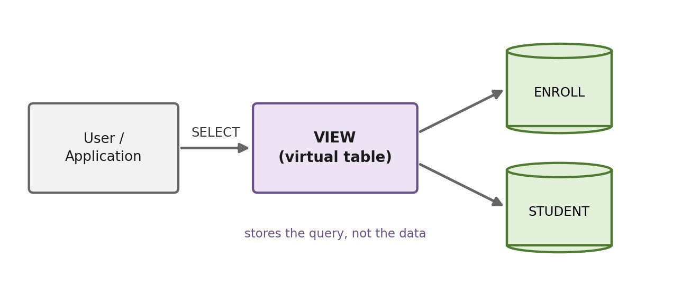

บทที่ 7 · วิว (View)
แนวคิดของวิว การสร้างและจัดการวิว วิวจากหลายตาราง วิวสรุปข้อมูล วิวซ้อนวิว การใช้วิวแก้โจทย์ที่ซับซ้อน การปรับปรุงข้อมูลผ่านวิว และข้อควรระวัง
- อธิบายแนวคิดของวิว ความแตกต่างจากตารางจริง และประโยชน์ของวิวได้
- สร้าง แก้ไข ตรวจสอบ และลบวิวด้วย CREATE / OR REPLACE / SHOW CREATE / DROP VIEW ได้
- สร้างวิวจากตารางเดียว จากการเชื่อมหลายตาราง และวิวที่สรุปข้อมูลด้วย GROUP BY ได้
- แตกโจทย์ที่ซับซ้อนออกเป็นวิวทีละชั้น แล้วใช้วิวตอบคำถามได้
- ระบุได้ว่าวิวใดปรับปรุงข้อมูลผ่านได้ และใช้ WITH CHECK OPTION ได้
- อธิบายข้อควรระวังของวิว และเปรียบเทียบวิวกับตาราง Derived Table และ CTE ได้
7.1 แนวคิดของวิว
วิว (View) คือ ตารางเสมือน (Virtual Table) ที่นิยามด้วยคำสั่ง SELECT — DBMS เก็บไว้เพียง “คำสั่ง” ไม่ได้เก็บ “ข้อมูล” ทุกครั้งที่เรียกใช้วิว ระบบจะนำคำสั่งนั้นไปประมวลผลกับตารางจริง (Base Table) ในขณะนั้น ผลลัพธ์จึงเป็นข้อมูลล่าสุดเสมอ

📦 ตารางจริง (Base Table)
- เก็บข้อมูลจริงบนดิสก์
- สร้างด้วย CREATE TABLE
- มี PK / FK / CHECK ของตัวเอง
- INSERT / UPDATE / DELETE ได้เสมอ
🪟 วิว (View)
- เก็บเฉพาะคำสั่ง SELECT
- สร้างด้วย CREATE VIEW
- ไม่มีข้อกำหนดบังคับของตัวเอง
- ปรับปรุงข้อมูลผ่านได้บางกรณี (หัวข้อ 7.9)
ตารางจริงเหมือน ห้องเก็บของ ส่วนวิวเหมือน หน้าต่าง ที่มองเข้าไปในห้อง — หน้าต่างแต่ละบานมองเห็นของคนละมุม (บางคอลัมน์ บางแถว) แต่ของในห้องมีชุดเดียว ถ้าของในห้องเปลี่ยน มองผ่านหน้าต่างก็เห็นการเปลี่ยนแปลงทันที
7.1.1 เห็นภาพการสร้างวิวทีละขั้น
ใช้ข้อมูลจริงจากตาราง student ในสคริปต์กรณีศึกษา (ภาคผนวก ก) สร้างวิว v_cs_honor ที่แสดง “นิสิตสาขา CS ที่มีเกรดเฉลี่ยตั้งแต่ 3.00 ขึ้นไป” แล้วดูว่าคำสั่งของวิวไปเลือกส่วนใดของตาราง
เรียงข้อมูลตามสาขา แล้วตามเกรดเฉลี่ยจากมากไปน้อย เพื่อให้แถวที่เกี่ยวข้องอยู่ติดกัน: แถวสีส้ม = แถวที่ผ่านเงื่อนไข major = 'CS' · กรอบสีแดง = แถวที่ผ่านทั้ง major = 'CS' และ gpa >= 3.00 คือข้อมูลที่วิวจะ “มองเห็น” (ทุกคอลัมน์ เพราะใช้ SELECT *)
| stdid | name | major | gpa | birthday |
|---|---|---|---|---|
| 70033 | Zoro | NULL | 3.98 | 2012-02-29 |
| 70035 | Nami | NULL | 2.85 | NULL |
| 70034 | Luffy | NULL | 1.55 | 2010-02-11 |
| 70037 | Chopper | NULL | NULL | 2011-12-24 |
| 60007 | L | Art | 3.98 | 2011-01-31 |
| 60008 | Kira | Art | 3.05 | 2015-02-25 |
| 60004 | Sendoh | CS | 3.98 | 2012-12-08 |
| 60001 | Rukawa | CS | 3.75 | 2010-05-13 |
| 60013 | Gon | CS | 2.78 | 2017-07-07 |
| 70036 | Sanji | CS | 2.78 | NULL |
| 60003 | Mitsui | CS | 2.00 | 2013-06-25 |
| 60012 | Hisoka | CS | 2.00 | 2015-06-06 |
| 60002 | Sakuragi | CS | NULL | 2010-01-15 |
| 60009 | Killua | English | 3.98 | 2015-03-31 |
| 60011 | Kurapika | English | 3.98 | 2016-02-20 |
| 60010 | Gon | English | 1.55 | 2016-02-20 |
| 70022 | NULL | English | NULL | NULL |
| 60005 | NULL | Math | 2.78 | 2011-09-02 |
| 60006 | Nobita | Math | 1.55 | NULL |
| 60015 | Near | Physics | 4.00 | 2014-08-24 |
| 60014 | Light | Physics | 2.55 | 2016-10-10 |
| 60016 | Mello | Physics | 1.55 | 2015-12-13 |
CREATE VIEW v_cs_honor AS SELECT * -- ทุกคอลัมน์ FROM student -- จากตารางจริง WHERE major = 'cs' -- เลือกแถว: สาขา CS (แถวสีส้ม) AND gpa >= 3.00; -- และเกรดเฉลี่ย ≥ 3.00 (ในกรอบ)
คำสั่งนี้ทำงานเสร็จทันทีโดยไม่มีการคัดลอกข้อมูลแม้แต่แถวเดียว — มีผลเพียงบันทึกนิยามของวิวลงในพจนานุกรมข้อมูล (Data Dictionary) · สังเกตว่าเขียน 'cs' ตัวเล็กก็ได้ผลเหมือน 'CS' เพราะ collation ปริยายของ MySQL ไม่สนตัวพิมพ์เล็ก/ใหญ่
ดูได้จากตาราง information_schema.VIEWS — ไม่มีข้อมูลนิสิตเก็บอยู่ในวิวเลย (MySQL ขยาย * เป็นรายชื่อคอลัมน์ให้เอง)
SELECT TABLE_NAME, VIEW_DEFINITION FROM information_schema.VIEWS WHERE TABLE_SCHEMA = DATABASE() AND TABLE_NAME = 'v_cs_honor';
| TABLE_NAME | VIEW_DEFINITION |
|---|---|
| v_cs_honor | select `std_66011200`.`student`.`stdid` AS `stdid`,`std_66011200`.`student`.`name` AS `name`,`std_66011200`.`student`.`major` AS `major`,`std_66011200`.`student`.`gpa` AS `gpa`,`std_66011200`.`student`.`birthday` AS `birthday` from `std_66011200`.`student` where ((`std_66011200`.`student`.`major` = 'cs') and (`std_66011200`.`student`.`gpa` >= 3.00)) |
ผลลัพธ์คือแถวที่อยู่ในกรอบสีแดงในขั้นที่ 1 พอดี: 2 แถว × 5 คอลัมน์
SELECT * FROM v_cs_honor;
| stdid | name | major | gpa | birthday |
|---|---|---|---|---|
| 60001 | Rukawa | CS | 3.75 | 2010-05-13 |
| 60004 | Sendoh | CS | 3.98 | 2012-12-08 |
แก้ gpa ของนิสิต 60013 จาก 2.78 เป็น 3.10 และเพิ่มนิสิตสาขา CS คนใหม่ในตาราง student (ไม่ได้แตะวิวเลย) แล้ว SELECT จากวิวอีกครั้ง — ทั้งสองแถวผ่านเงื่อนไขของวิว จึงปรากฏในวิวทันที
UPDATE student SET gpa = 3.10 WHERE stdid = '60013';
INSERT INTO student VALUES ('80001', 'Rintaro', 'CS', 3.50, '2012-12-14');
SELECT * FROM v_cs_honor;| stdid | name | major | gpa | birthday |
|---|---|---|---|---|
| 60001 | Rukawa | CS | 3.75 | 2010-05-13 |
| 60004 | Sendoh | CS | 3.98 | 2012-12-08 |
| 60013 | Gon | CS | 3.10 | 2017-07-07 |
| 80001 | Rintaro | CS | 3.50 | 2012-12-14 |
- SELECT-list ของวิว = หน้าต่างแนวตั้ง (เลือกคอลัมน์) · WHERE ของวิว = หน้าต่างแนวนอน (เลือกแถว)
- วิวเก็บคำสั่ง ไม่เก็บข้อมูล — ข้อมูลมีชุดเดียวอยู่ในตารางจริง จึงไม่มีปัญหาความซ้ำซ้อนหรือข้อมูลไม่ตรงกัน
- ทุกครั้งที่ใช้วิว ผลลัพธ์คำนวณใหม่จากตารางจริง “ณ ขณะนั้น” เสมอ
7.2 ประโยชน์ของวิว
| ประโยชน์ | คำอธิบาย | ตัวอย่างในบทนี้ |
|---|---|---|
| ซ่อนความซับซ้อน | คำสั่งที่ JOIN 4–5 ตาราง เก็บเป็นวิวครั้งเดียว ต่อไปใช้แค่ SELECT ธรรมดา | v_enroll_detail |
| นำกลับมาใช้ซ้ำ | ตรรกะเดียวกัน (เช่น วิธีคิดเกรดเฉลี่ย) เขียนครั้งเดียว ทุกรายงานใช้ร่วมกัน แก้จุดเดียวมีผลทุกที่ | v_student_gpa |
| แตกปัญหาเป็นขั้น | โจทย์ซับซ้อนสร้างวิวทีละชั้น แต่ละชั้นตรวจผลได้ง่าย | หัวข้อ 7.7 |
| ความปลอดภัย | ให้ผู้ใช้เห็นเฉพาะคอลัมน์/แถวที่อนุญาต โดยไม่ให้สิทธิ์ตารางจริง | v_student_public |
| มุมมองเฉพาะกลุ่ม | คือ External Level ในสถาปัตยกรรม 3 ระดับ (บทที่ 1) | วิวของอาจารย์ / ฝ่ายทะเบียน |
| ความเป็นอิสระเชิงตรรกะ | ถ้าโครงสร้างตารางเปลี่ยน แก้แค่วิว โปรแกรมที่ใช้วิวไม่ต้องแก้ | CREATE OR REPLACE VIEW |
7.3 การสร้างและจัดการวิว
CREATE [OR REPLACE] VIEW ชื่อวิว [(คอลัมน์1, คอลัมน์2, ...)] AS SELECT ... [WITH [CASCADED | LOCAL] CHECK OPTION]; ALTER VIEW ชื่อวิว AS SELECT ...; -- แก้นิยามวิว DROP VIEW [IF EXISTS] ชื่อวิว; -- ลบวิว (ตารางจริงไม่ได้รับผลกระทบ)
- ตั้งชื่อวิวให้ขึ้นต้นด้วย
v_เพื่อแยกจากตารางได้ทันที - ชื่อวิวต้องไม่ซ้ำกับชื่อตารางในฐานข้อมูลเดียวกัน
- ทุกคอลัมน์ในวิวต้องมีชื่อ — คอลัมน์ที่คำนวณ (เช่น
COUNT(*)) ต้องตั้ง alias หรือระบุรายชื่อคอลัมน์หลังชื่อวิว
CREATE VIEW v_cs_student AS SELECT stdid, name, gpa, birthday FROM student WHERE major = 'CS'; SELECT * FROM v_cs_student WHERE gpa >= 2.50 ORDER BY gpa DESC;
| stdid | name | gpa | birthday |
|---|---|---|---|
| 60004 | Sendoh | 3.98 | 2012-12-08 |
| 60001 | Rukawa | 3.75 | 2010-05-13 |
| 60013 | Gon | 2.78 | 2017-07-07 |
| 70036 | Sanji | 2.78 | NULL |
เมื่อสั่ง SELECT * FROM v_cs_student WHERE gpa >= 2.50 MySQL จะนำนิยามของวิวมา “แทนที่” ชื่อวิว แล้วรวมเงื่อนไขเข้าด้วยกัน (เรียกว่าวิธี MERGE) จนได้คำสั่งที่ทำงานกับตารางจริง ดังนี้
SELECT stdid, name, gpa, birthday FROM student WHERE major = 'CS' -- เงื่อนไขจากวิว AND gpa >= 2.50 -- เงื่อนไขจากคำสั่งที่เรียกใช้ ORDER BY gpa DESC;
ดังนั้นสิ่งที่ทำกับตารางได้ (WHERE, ORDER BY, GROUP BY, JOIN กับตารางอื่น หรือแม้แต่ JOIN กับวิวอื่น) ก็ทำกับวิวได้ทั้งหมด — ในมุมมองของคำสั่ง SELECT วิวคือ “ตาราง” ตารางหนึ่ง
CREATE VIEW v_lecturer_salary (lecturer_id, lecturer_name, monthly, yearly) AS SELECT lecid, name, salary, salary * 12 FROM lecturer; SELECT * FROM v_lecturer_salary WHERE yearly >= 700000;
| lecturer_id | lecturer_name | monthly | yearly |
|---|---|---|---|
| t03 | Yoda | 80000 | 960000 |
| t05 | IronMan | 65000 | 780000 |
| t08 | Cell | 70000 | 840000 |
| t09 | Frieza | 60000 | 720000 |
| t13 | Thor | 60000 | 720000 |
| t14 | Yoda | 80000 | 960000 |
CREATE VIEW v_bad_name AS SELECT major, COUNT(*), ROUND(AVG(gpa), 2) FROM student GROUP BY major; SELECT * FROM v_bad_name;
| major | COUNT(*) | ROUND(AVG(gpa), 2) |
|---|---|---|
| CS | 7 | 2.88 |
| Math | 2 | 2.17 |
| Art | 2 | 3.52 |
| English | 4 | 3.17 |
| Physics | 3 | 2.70 |
| NULL | 4 | 2.79 |
แก้นิยามวิวด้วย CREATE OR REPLACE VIEW (หรือ ALTER VIEW) — เช่น เพิ่มคอลัมน์ major เข้าไปในวิว v_cs_student
CREATE OR REPLACE VIEW v_cs_student AS SELECT stdid, name, major, gpa, birthday FROM student WHERE major = 'CS'; DESCRIBE v_cs_student;
| Field | Type | Null | Key | Default | Extra |
|---|---|---|---|---|---|
| stdid | varchar(10) | NO | NULL | ||
| name | varchar(50) | YES | NULL | ||
| major | varchar(20) | YES | NULL | ||
| gpa | decimal(3,2) | YES | NULL | ||
| birthday | date | YES | NULL |
ตรวจสอบวิวที่มีอยู่
SHOW FULL TABLES WHERE Table_type = 'VIEW';
| Tables_in_zz_lecture_build | Table_type |
|---|---|
| v_bad_name | VIEW |
| v_cs_honor | VIEW |
| v_cs_student | VIEW |
| v_lecturer_salary | VIEW |
SELECT TABLE_NAME, VIEW_DEFINITION, IS_UPDATABLE FROM information_schema.VIEWS WHERE TABLE_SCHEMA = DATABASE() AND TABLE_NAME = 'v_cs_student';
| TABLE_NAME | VIEW_DEFINITION | IS_UPDATABLE |
|---|---|---|
| v_cs_student | select `std_66011200`.`student`.`stdid` AS `stdid`,`std_66011200`.`student`.`name` AS `name`,`std_66011200`.`student`.`major` AS `major`,`std_66011200`.`student`.`gpa` AS `gpa`,`std_66011200`.`student`.`birthday` AS `birthday` from `std_66011200`.`student` where (`std_66011200`.`student`.`major` = 'CS') | YES |
ใน DBeaver ใช้ SHOW CREATE VIEW v_cs_student; หรือดับเบิลคลิกวิวใน Database Navigator → แท็บ Source — สังเกตว่า MySQL เขียนคำสั่งใหม่ในรูปแบบเต็ม (ชื่อตารางมีชื่อฐานข้อมูลนำหน้า ใส่ backtick ทุกชื่อ)
DROP VIEW IF EXISTS v_bad_name;
จงสร้างวิว v_english_lecturer แสดงรหัส ชื่อ เงินเดือนของอาจารย์สาขา English แล้วใช้วิวแสดงอาจารย์ที่เงินเดือนต่ำกว่า 40,000
CREATE VIEW v_english_lecturer AS SELECT lecid, name, salary FROM lecturer WHERE major = 'English'; SELECT * FROM v_english_lecturer WHERE salary < 40000;
| lecid | name | salary |
|---|---|---|
| t06 | Goku | 20000 |
| t07 | Vegeta | 25000 |
จงสร้างวิว v_subject_short(code, title, credit_hours) จากตาราง subject แล้วแสดงวิชาที่มีมากกว่า 3 หน่วยกิต
CREATE VIEW v_subject_short (code, title, credit_hours) AS SELECT subid, name, credit FROM subject; SELECT * FROM v_subject_short WHERE credit_hours > 3;
| code | title | credit_hours |
|---|---|---|
| CS007 | Robotics | 4 |
| CS009 | Project | 6 |
| MA002 | Discrete Math | 4 |
เมื่อตั้งชื่อคอลัมน์ใหม่แล้ว ต้องใช้ชื่อใหม่ (credit_hours) ในการ SELECT จากวิว ไม่ใช่ชื่อเดิม (credit)
7.4 วิวจากตารางเดียว
ใช้คัดบางคอลัมน์ บางแถว และเพิ่มคอลัมน์ที่คำนวณได้ เช่น อายุ (Derived Attribute ในบทที่ 2) — ไม่ต้องเขียน TIMESTAMPDIFF ซ้ำทุกครั้ง
CREATE VIEW v_student_profile AS
SELECT stdid,
IFNULL(name, '(ไม่มีชื่อ)') AS name,
IFNULL(major, 'Undeclared') AS major,
gpa,
birthday,
TIMESTAMPDIFF(YEAR, birthday, CURDATE()) AS age,
CASE
WHEN gpa IS NULL THEN 'ยังไม่มีข้อมูล'
WHEN gpa >= 3.50 THEN 'ดีเยี่ยม'
WHEN gpa >= 2.50 THEN 'ดี'
WHEN gpa >= 2.00 THEN 'พอใช้'
ELSE 'ต้องปรับปรุง'
END AS level
FROM student;
SELECT * FROM v_student_profile ORDER BY stdid;| stdid | name | major | gpa | birthday | age | level |
|---|---|---|---|---|---|---|
| 60001 | Rukawa | CS | 3.75 | 2010-05-13 | 16 | ดีเยี่ยม |
| 60002 | Sakuragi | CS | NULL | 2010-01-15 | 16 | ยังไม่มีข้อมูล |
| 60003 | Mitsui | CS | 2.00 | 2013-06-25 | 13 | พอใช้ |
| 60004 | Sendoh | CS | 3.98 | 2012-12-08 | 13 | ดีเยี่ยม |
| 60005 | (ไม่มีชื่อ) | Math | 2.78 | 2011-09-02 | 15 | ดี |
| 60006 | Nobita | Math | 1.55 | NULL | NULL | ต้องปรับปรุง |
| 60007 | L | Art | 3.98 | 2011-01-31 | 15 | ดีเยี่ยม |
| 60008 | Kira | Art | 3.05 | 2015-02-25 | 11 | ดี |
เมื่อมีวิวแล้ว คำถามที่เกี่ยวกับอายุและระดับผลการเรียนจะสั้นลงมาก
SELECT stdid, name, major, age, gpa FROM v_student_profile WHERE age >= 15 AND level = 'ดีเยี่ยม';
| stdid | name | major | age | gpa |
|---|---|---|---|---|
| 60001 | Rukawa | CS | 16 | 3.75 |
| 60007 | L | Art | 15 | 3.98 |
SELECT level, COUNT(*) AS n_student FROM v_student_profile GROUP BY level ORDER BY n_student DESC;
| level | n_student |
|---|---|
| ดีเยี่ยม | 7 |
| ดี | 6 |
| ต้องปรับปรุง | 4 |
| ยังไม่มีข้อมูล | 3 |
| พอใช้ | 2 |
จงสร้างวิว v_subject_type แสดงรหัสวิชา ชื่อ หน่วยกิต สาขา และ credit_type (“น้อย” < 3, “ปกติ” = 3, “หนัก” > 3) และ has_pre (“มี” / “ไม่มี” วิชาบังคับก่อน) แล้วใช้วิวนับจำนวนวิชาแต่ละ credit_type ในสาขา CS
CREATE VIEW v_subject_type AS
SELECT subid, name, credit, major,
CASE WHEN credit < 3 THEN 'น้อย'
WHEN credit = 3 THEN 'ปกติ'
ELSE 'หนัก' END AS credit_type,
IF(pre IS NULL, 'ไม่มี', 'มี') AS has_pre
FROM subject;
SELECT credit_type, COUNT(*) AS n_subject
FROM v_subject_type
WHERE major = 'CS'
GROUP BY credit_type;| credit_type | n_subject |
|---|---|
| ปกติ | 6 |
| น้อย | 2 |
| หนัก | 2 |
7.5 วิวจากการเชื่อมหลายตาราง
นี่คือการใช้งานวิวที่พบบ่อยที่สุด — JOIN ที่ต้องเขียนซ้ำบ่อย ๆ เก็บไว้เป็นวิวครั้งเดียว ภาพด้านล่างแสดงว่าคอลัมน์ของวิว v_section_detail มาจากตารางใดบ้าง (สีของคอลัมน์ = ตารางต้นทาง · กรอบประ = คอลัมน์ที่ใช้เชื่อม)
section
secidsubidlecidtermsubject
subidnamecreditmajorprelecturer
lecidnamesalarymajorv_section_detail (วิว)
secidtermsubidsubject_namecreditlecidlecturer_namelecturer_majorสังเกตว่า subject และ lecturer มีคอลัมน์ชื่อ name และ major ซ้ำกัน — ในวิวต้องตั้ง alias ให้ไม่ซ้ำ (subject_name, lecturer_name, lecturer_major) เพราะชื่อคอลัมน์ในวิวต้องไม่ซ้ำกัน ส่วนคอลัมน์ที่ขีดฆ่า (salary, pre …) ไม่ได้ถูกเลือกมาไว้ในวิว
CREATE VIEW v_section_detail AS
SELECT sec.secid, sec.term,
sub.subid, sub.name AS subject_name, sub.credit,
l.lecid, l.name AS lecturer_name, l.major AS lecturer_major
FROM section sec
INNER JOIN subject sub ON sec.subid = sub.subid
INNER JOIN lecturer l ON sec.lecid = l.lecid;
SELECT * FROM v_section_detail ORDER BY secid;| secid | term | subid | subject_name | credit | lecid | lecturer_name | lecturer_major |
|---|---|---|---|---|---|---|---|
| 1 | 2023-1 | CS001 | Programming | 3 | t01 | Peter Parker | CS |
| 2 | 2023-1 | CS004 | Database | 3 | t01 | Peter Parker | CS |
| 3 | 2023-1 | CS005 | Graphics | 3 | t01 | Peter Parker | CS |
| 4 | 2023-1 | CS003 | Web Design | 2 | t02 | Steve Roger | CS |
| 5 | 2023-1 | CS006 | Mobile Apps | 2 | t02 | Steve Roger | CS |
| 6 | 2023-2 | CS002 | Java | 3 | t01 | Peter Parker | CS |
| 7 | 2023-2 | CS003 | Web Design | 2 | t01 | Peter Parker | CS |
| 8 | 2023-3 | CS004 | Database | 3 | t03 | Yoda | Math |
ตามรอย 1 แถว: แถว secid = 1 ของวิวประกอบขึ้นจาก 3 แถวในตารางจริง ดังนี้
① section
| secid | subid | lecid | term |
|---|---|---|---|
| 1 | CS001 | t01 | 2023-1 |
② subject
| subid | name | credit |
|---|---|---|
| CS001 | Programming | 3 |
③ lecturer
| lecid | name | major |
|---|---|---|
| t01 | Peter Parker | CS |
SELECT * FROM v_section_detail WHERE secid = 1;
| secid | term | subid | subject_name | credit | lecid | lecturer_name | lecturer_major |
|---|---|---|---|---|---|---|---|
| 1 | 2023-1 | CS001 | Programming | 3 | t01 | Peter Parker | CS |
CREATE VIEW v_enroll_detail AS
SELECT s.stdid AS student_id,
s.name AS student_name,
s.major AS student_major,
d.secid, d.term, d.subid AS subject_id, d.subject_name, d.credit,
d.lecturer_name,
e.grade,
CASE e.grade WHEN 'A' THEN 4 WHEN 'B' THEN 3 WHEN 'C' THEN 2
WHEN 'D' THEN 1 WHEN 'F' THEN 0 END AS point
FROM enroll e
INNER JOIN student s ON e.stdid = s.stdid
INNER JOIN v_section_detail d ON e.secid = d.secid;
SELECT * FROM v_enroll_detail ORDER BY student_id, term;| student_id | student_name | student_major | secid | term | subject_id | subject_name | credit | lecturer_name | grade | point |
|---|---|---|---|---|---|---|---|---|---|---|
| 60001 | Rukawa | CS | 1 | 2023-1 | CS001 | Programming | 3 | Peter Parker | A | 4 |
| 60001 | Rukawa | CS | 2 | 2023-1 | CS004 | Database | 3 | Peter Parker | C | 2 |
| 60001 | Rukawa | CS | 6 | 2023-2 | CS002 | Java | 3 | Peter Parker | B | 3 |
| 60001 | Rukawa | CS | 10 | 2023-3 | CS008 | AI | 3 | Peter Parker | A | 4 |
| 60001 | Rukawa | CS | 8 | 2023-3 | CS004 | Database | 3 | Yoda | A | 4 |
| 60001 | Rukawa | CS | 15 | 2024-2 | CS001 | Programming | 3 | Peter Parker | A | 4 |
| 60001 | Rukawa | CS | 19 | 2024-2 | MA002 | Discrete Math | 4 | IronMan | B | 3 |
| 60001 | Rukawa | CS | 31 | 2024-3 | CS009 | Project | 6 | Steve Roger | A | 4 |
v_enroll_detail สร้างจากวิว v_section_detail อีกที — ไม่ต้องเขียน JOIN subject และ lecturer ซ้ำ ถ้าวันหนึ่งต้องแก้วิธีแสดงชื่ออาจารย์ แก้ที่ v_section_detail จุดเดียว
เทียบความยาว: “แสดงชื่อวิชา ภาค อาจารย์ เกรด ของ Rukawa” โดยไม่ใช้วิว ต้อง JOIN 5 ตาราง แต่เมื่อมีวิวเหลือเพียง
SELECT term, subject_name, credit, lecturer_name, grade FROM v_enroll_detail WHERE student_name = 'Rukawa' ORDER BY term;
| term | subject_name | credit | lecturer_name | grade |
|---|---|---|---|---|
| 2023-1 | Programming | 3 | Peter Parker | A |
| 2023-1 | Database | 3 | Peter Parker | C |
| 2023-2 | Java | 3 | Peter Parker | B |
| 2023-3 | Database | 3 | Yoda | A |
| 2023-3 | AI | 3 | Peter Parker | A |
| 2024-2 | Programming | 3 | Peter Parker | A |
| 2024-2 | Discrete Math | 4 | IronMan | B |
| 2024-3 | Project | 6 | Steve Roger | A |
| 2025-3 | Security | 3 | Steve Roger | B |
CREATE VIEW v_subject_pre AS
SELECT sub.subid, sub.name AS subject_name, sub.credit,
pre.subid AS pre_id,
IFNULL(pre.name, '-') AS pre_name
FROM subject sub
LEFT JOIN subject pre ON sub.pre = pre.subid;
SELECT * FROM v_subject_pre WHERE pre_id IS NOT NULL ORDER BY subid;| subid | subject_name | credit | pre_id | pre_name |
|---|---|---|---|---|
| CS002 | Java | 3 | CS001 | Programming |
| CS003 | Web Design | 2 | CS001 | Programming |
| CS004 | Database | 3 | CS001 | Programming |
| CS005 | Graphics | 3 | CS002 | Java |
| CS006 | Mobile Apps | 2 | CS002 | Java |
| CS007 | Robotics | 4 | CS002 | Java |
| CS008 | AI | 3 | CS002 | Java |
| CS009 | Project | 6 | CS004 | Database |
| CS010 | Security | 3 | CS004 | Database |
| EN002 | Reading | 3 | EN001 | English |
| EN003 | Conversation | 3 | EN001 | English |
| EN004 | Writing | 3 | EN002 | Reading |
| MA002 | Discrete Math | 4 | MA001 | Mathematics |
| MA003 | Statistics | 3 | MA002 | Discrete Math |
| TH002 | Thai Writing | 1 | TH001 | Thai |
วิวยังใช้ รวมข้อมูลจากหลายตารางที่มีโครงสร้างคล้ายกัน ให้อยู่ในรูปเดียวด้วย UNION ได้ เช่น ทำ “สมุดรายชื่อบุคคล” ของมหาวิทยาลัยที่รวมทั้งนิสิตและอาจารย์ — โปรแกรมค้นหารายชื่อใช้วิวเดียว ไม่ต้องค้นสองตาราง
CREATE VIEW v_person AS SELECT stdid AS person_id, name, major, 'นิสิต' AS person_type FROM student UNION ALL SELECT lecid, name, major, 'อาจารย์' FROM lecturer; SELECT person_type, COUNT(*) AS n FROM v_person GROUP BY person_type;
| person_type | n |
|---|---|
| นิสิต | 22 |
| อาจารย์ | 16 |
SELECT * FROM v_person WHERE name LIKE 'Yo%' OR name LIKE 'Go%' ORDER BY person_type, person_id;
| person_id | name | major | person_type |
|---|---|---|---|
| 60010 | Gon | English | นิสิต |
| 60013 | Gon | CS | นิสิต |
| t03 | Yoda | Math | อาจารย์ |
| t06 | Goku | English | อาจารย์ |
| t14 | Yoda | CS | อาจารย์ |
| t15 | Gohan | Math | อาจารย์ |
ชื่อคอลัมน์ของวิวมาจาก SELECT ชุดแรก เท่านั้น (person_id, name, major, person_type) ชุดที่สองต้องมีจำนวนคอลัมน์เท่ากันและชนิดข้อมูลเข้ากันได้ — วิวที่มี UNION ปรับปรุงข้อมูลผ่านไม่ได้ (หัวข้อ 7.9)
ใช้วิว v_section_detail แสดงชื่อวิชาและภาคเรียนที่อาจารย์สาขา CS สอนในปี 2024
SELECT secid, term, subject_name, lecturer_name FROM v_section_detail WHERE lecturer_major = 'CS' AND term LIKE '2024-%' ORDER BY term, secid;
| secid | term | subject_name | lecturer_name |
|---|---|---|---|
| 11 | 2024-1 | Programming | Peter Parker |
| 12 | 2024-1 | Database | Peter Parker |
| 13 | 2024-1 | Graphics | Steve Roger |
| 24 | 2024-1 | Programming | Steve Roger |
| 26 | 2024-1 | Robotics | Steve Roger |
| 14 | 2024-2 | AI | Steve Roger |
| 15 | 2024-2 | Programming | Peter Parker |
| 16 | 2024-2 | Java | Peter Parker |
| 17 | 2024-2 | Graphics | Peter Parker |
| 28 | 2024-2 | Project | Steve Roger |
| 29 | 2024-2 | Java | Steve Roger |
| 20 | 2024-3 | Database | Peter Parker |
| 31 | 2024-3 | Project | Steve Roger |
ใช้วิว v_enroll_detail แสดงรหัสนิสิต ชื่อ ชื่อวิชา ชื่อผู้สอน ภาคเรียน ของการเรียนที่ได้เกรด F เรียงตามรหัสนิสิต
SELECT student_id, student_name, subject_name, lecturer_name, term FROM v_enroll_detail WHERE grade = 'F' ORDER BY student_id, term;
| student_id | student_name | subject_name | lecturer_name | term |
|---|---|---|---|---|
| 60002 | Sakuragi | Java | Peter Parker | 2023-2 |
| 60003 | Mitsui | Mobile Apps | Steve Roger | 2023-1 |
| 60003 | Mitsui | AI | Peter Parker | 2023-3 |
| 60004 | Sendoh | Web Design | Steve Roger | 2023-1 |
| 60006 | Nobita | Programming | Peter Parker | 2023-1 |
| 60006 | Nobita | Database | Peter Parker | 2024-1 |
| 60006 | Nobita | Graphics | Steve Roger | 2024-1 |
| 60006 | Nobita | Database | Yoda | 2024-3 |
| 60008 | Kira | Database | IronMan | 2024-3 |
| 60008 | Kira | Discrete Math | IronMan | 2024-3 |
เทียบกับคำสั่งเดียวกันในบทที่ 6 ที่ต้อง JOIN 5 ตาราง — โจทย์เดียวกัน แต่สั้นและอ่านง่ายกว่ามาก
7.6 วิวสรุปข้อมูล (Aggregate View)
วิวที่มี GROUP BY ใช้สร้าง “ตารางสรุป” สำหรับรายงาน — ข้อมูลคำนวณใหม่ทุกครั้งที่เรียกใช้ จึงถูกต้องเสมอ
CREATE VIEW v_section_summary AS
SELECT d.secid, d.term, d.subject_name, d.lecturer_name,
COUNT(e.stdid) AS n_student,
SUM(CASE WHEN e.grade = 'A' THEN 1 ELSE 0 END) AS n_A,
SUM(CASE WHEN e.grade = 'F' THEN 1 ELSE 0 END) AS n_F,
SUM(CASE WHEN e.grade IS NULL AND e.stdid IS NOT NULL THEN 1 ELSE 0 END) AS n_waiting
FROM v_section_detail d
LEFT JOIN enroll e ON d.secid = e.secid
GROUP BY d.secid, d.term, d.subject_name, d.lecturer_name;
SELECT * FROM v_section_summary ORDER BY secid;| secid | term | subject_name | lecturer_name | n_student | n_A | n_F | n_waiting |
|---|---|---|---|---|---|---|---|
| 1 | 2023-1 | Programming | Peter Parker | 5 | 1 | 2 | 0 |
| 2 | 2023-1 | Database | Peter Parker | 4 | 1 | 1 | 0 |
| 3 | 2023-1 | Graphics | Peter Parker | 0 | 0 | 0 | 0 |
| 4 | 2023-1 | Web Design | Steve Roger | 1 | 0 | 1 | 0 |
| 5 | 2023-1 | Mobile Apps | Steve Roger | 4 | 1 | 1 | 0 |
| 6 | 2023-2 | Java | Peter Parker | 4 | 1 | 1 | 0 |
| 7 | 2023-2 | Web Design | Peter Parker | 2 | 1 | 0 | 0 |
| 8 | 2023-3 | Database | Yoda | 2 | 1 | 0 | 0 |
| 9 | 2023-3 | Robotics | IronMan | 2 | 0 | 0 | 0 |
| 10 | 2023-3 | AI | Peter Parker | 3 | 1 | 1 | 0 |
CREATE VIEW v_student_gpa AS
SELECT student_id, student_name, student_major,
COUNT(*) AS n_subject,
SUM(credit) AS total_credit,
ROUND(SUM(credit * point) / SUM(credit), 2) AS gpa_calc
FROM v_enroll_detail
WHERE grade IS NOT NULL
GROUP BY student_id, student_name, student_major;
SELECT * FROM v_student_gpa ORDER BY gpa_calc DESC;| student_id | student_name | student_major | n_subject | total_credit | gpa_calc |
|---|---|---|---|---|---|
| 60012 | Hisoka | CS | 2 | 6 | 3.50 |
| 60001 | Rukawa | CS | 9 | 31 | 3.48 |
| 60007 | L | Art | 7 | 27 | 3.44 |
| 60004 | Sendoh | CS | 9 | 29 | 3.38 |
| 60011 | Kurapika | English | 4 | 10 | 3.20 |
| 60009 | Killua | English | 5 | 14 | 3.14 |
| 60005 | NULL | Math | 8 | 23 | 2.96 |
| 60002 | Sakuragi | CS | 6 | 19 | 2.84 |
| 60013 | Gon | CS | 6 | 15 | 2.47 |
| 70022 | NULL | English | 4 | 10 | 2.10 |
| 60003 | Mitsui | CS | 6 | 19 | 2.00 |
| 70036 | Sanji | CS | 2 | 6 | 2.00 |
| 70037 | Chopper | NULL | 1 | 3 | 2.00 |
| 60010 | Gon | English | 9 | 24 | 1.33 |
| 60006 | Nobita | Math | 6 | 17 | 0.65 |
| 70034 | Luffy | NULL | 5 | 15 | 0.60 |
| 60008 | Kira | Art | 2 | 7 | 0.00 |
คอลัมน์ student.gpa เป็นข้อมูลที่กรอกไว้ (ดีนอร์มัลไลซ์ — บทที่ 3) ส่วน gpa_calc คำนวณจากการลงทะเบียนจริง จึงไม่ตรงกัน นี่คือเหตุผลที่ไม่ควรเก็บค่าที่คำนวณได้ — วิวคือทางเลือกที่ดีกว่า
CREATE VIEW v_lecturer_load AS
SELECT l.lecid, l.name, l.major,
COUNT(DISTINCT sec.secid) AS n_section,
COUNT(DISTINCT sec.subid) AS n_subject,
COUNT(e.stdid) AS n_student
FROM lecturer l
LEFT JOIN section sec ON l.lecid = sec.lecid
LEFT JOIN enroll e ON sec.secid = e.secid
GROUP BY l.lecid, l.name, l.major;
SELECT * FROM v_lecturer_load ORDER BY n_student DESC, lecid;| lecid | name | major | n_section | n_subject | n_student |
|---|---|---|---|---|---|
| t01 | Peter Parker | CS | 14 | 6 | 37 |
| t02 | Steve Roger | CS | 11 | 9 | 17 |
| t03 | Yoda | Math | 8 | 7 | 13 |
| t05 | IronMan | Thai | 6 | 5 | 11 |
| t04 | Post Malone | Thai | 4 | 4 | 5 |
| t06 | Goku | English | 2 | 2 | 5 |
| t08 | Cell | English | 1 | 1 | 3 |
| t07 | Vegeta | English | 1 | 1 | 2 |
| t09 | Frieza | English | 1 | 1 | 2 |
| t10 | Piccolo | Art | 1 | 1 | 2 |
| t14 | Yoda | CS | 1 | 1 | 2 |
| t15 | Gohan | Math | 1 | 1 | 1 |
| t11 | Batman | DC | 0 | 0 | 0 |
| t12 | Wolverine | DC | 0 | 0 | 0 |
| t13 | Thor | DC | 1 | 1 | 0 |
| t16 | Levi | Physics | 0 | 0 | 0 |
หลัง JOIN กับ enroll กลุ่มเรียนหนึ่งจะซ้ำหลายแถว (1 แถวต่อนิสิต 1 คน) ถ้าใช้ COUNT(sec.secid) จะได้จำนวนเท่ากับจำนวนนิสิต ไม่ใช่จำนวนกลุ่ม — ต้องใช้ COUNT(DISTINCT sec.secid)
CREATE VIEW v_term_summary AS
SELECT term,
COUNT(*) AS n_section,
SUM(n_student) AS n_enroll,
ROUND(AVG(n_student), 2) AS avg_per_section
FROM v_section_summary
GROUP BY term;
SELECT * FROM v_term_summary ORDER BY term;| term | n_section | n_enroll | avg_per_section |
|---|---|---|---|
| 2023-1 | 5 | 14 | 2.80 |
| 2023-2 | 2 | 6 | 3.00 |
| 2023-3 | 3 | 7 | 2.33 |
| 2024-1 | 7 | 7 | 1.00 |
| 2024-2 | 9 | 20 | 2.22 |
| 2024-3 | 7 | 9 | 1.29 |
| 2025-1 | 5 | 12 | 2.40 |
| 2025-2 | 4 | 8 | 2.00 |
| 2025-3 | 8 | 15 | 1.88 |
| 2026-1 | 2 | 2 | 1.00 |
จงสร้างวิว v_major_stat แสดงสาขา (NULL ให้แสดง Undeclared) จำนวนนิสิต gpa สูงสุด ต่ำสุด และเฉลี่ย แล้วใช้วิวแสดงสาขาที่มี gpa เฉลี่ยมากกว่า 2.80
CREATE VIEW v_major_stat AS
SELECT IFNULL(major, 'Undeclared') AS major,
COUNT(*) AS n_student,
MAX(gpa) AS max_gpa,
MIN(gpa) AS min_gpa,
ROUND(AVG(gpa), 2) AS avg_gpa
FROM student
GROUP BY major;
SELECT * FROM v_major_stat WHERE avg_gpa > 2.80 ORDER BY avg_gpa DESC;| major | n_student | max_gpa | min_gpa | avg_gpa |
|---|---|---|---|---|
| Art | 2 | 3.98 | 3.05 | 3.52 |
| English | 4 | 3.98 | 1.55 | 3.17 |
| CS | 7 | 3.98 | 2.00 | 2.88 |
สังเกตว่าเงื่อนไข avg_gpa > 2.80 เขียนใน WHERE ได้แล้ว — เพราะในมุมของคำสั่งชั้นนอก avg_gpa เป็นแค่คอลัมน์หนึ่งของวิว (เทียบกับต้องใช้ HAVING ถ้าไม่มีวิว)
จงสร้างวิว v_subject_stat แสดงรหัสวิชา ชื่อวิชา จำนวนครั้งที่เปิดสอน จำนวนนิสิตที่เคยลงทั้งหมด (รวมวิชาที่ไม่เคยเปิด ให้เป็น 0) แล้วใช้วิวแสดงวิชาที่ไม่เคยมีคนลงเลย
CREATE VIEW v_subject_stat AS
SELECT sub.subid, sub.name,
COUNT(DISTINCT sec.secid) AS n_open,
COUNT(e.stdid) AS n_enroll
FROM subject sub
LEFT JOIN section sec ON sub.subid = sec.subid
LEFT JOIN enroll e ON sec.secid = e.secid
GROUP BY sub.subid, sub.name;
SELECT * FROM v_subject_stat WHERE n_enroll = 0;| subid | name | n_open | n_enroll |
|---|---|---|---|
| EN002 | Reading | 0 | 0 |
| EN004 | Writing | 0 | 0 |
| PH001 | Physics | 0 | 0 |
| TH002 | Thai Writing | 1 | 0 |
7.7 ใช้วิวแก้โจทย์ที่ซับซ้อน
โจทย์บางข้อต้องคำนวณ “ผลสรุป” ก่อน แล้วค่อยเอาผลสรุปนั้นไปเปรียบเทียบ/จัดอันดับอีกชั้น — ถ้าเขียนในคำสั่งเดียวจะซ้อน Subquery หลายชั้นจนอ่านยาก วิธีคิดที่แนะนำคือ
- โจทย์มีคำว่า มากที่สุด / น้อยที่สุด / สูงกว่าค่าเฉลี่ย ของสิ่งที่ต้อง นับหรือรวมก่อน (เช่น สาขาที่มีนิสิตมากที่สุด = MAX ของ COUNT)
- ต้องเปรียบเทียบผลสรุปของกลุ่มหนึ่งกับผลสรุปของกลุ่มอื่น หรือของกลุ่มที่ใหญ่กว่า (อาจารย์ vs ค่าเฉลี่ยของสาขา)
- ต้องใช้ผลสรุปเดียวกัน มากกว่า 1 ครั้ง ในคำสั่งเดียว (ทั้งชั้นนอกและใน Subquery)
- ต้องสรุปมากกว่า 1 ระดับ (นิสิต-ภาคเรียน → นิสิต) หรือต้อง JOIN 4–5 ตารางซ้ำหลายครั้ง
แผนผังวิวที่ใช้ในหัวข้อนี้ — วิวแต่ละชั้นสร้างต่อจากชั้นก่อนหน้า ชั้นบนสุดคือตารางจริง ชั้นล่างสุดคือคำตอบของโจทย์
โจทย์ที่ 1 · สาขาที่มีนิสิตมากที่สุด — ฟังก์ชันรวมซ้อนฟังก์ชันรวม
โจทย์ดูง่าย แต่ต้องใช้ MAX ของ COUNT — ซึ่ง SQL ไม่อนุญาตให้ซ้อนฟังก์ชันรวมในระดับเดียวกัน
SELECT major, COUNT(*) AS n_student FROM student GROUP BY major HAVING COUNT(*) = MAX(COUNT(*));
และถ้าใช้ ORDER BY n_student DESC LIMIT 1 ก็ไม่ถูกต้องเสมอไป เพราะถ้ามีหลายสาขาที่จำนวนเท่ากัน จะได้เพียงสาขาเดียว วิธีที่ถูกคือ สรุปก่อน 1 ชั้น (นับนิสิตแต่ละสาขา) เก็บเป็นวิว แล้วค่อยหาค่าสูงสุดจากวิว
CREATE VIEW v_major_count AS SELECT major, COUNT(*) AS n_student FROM student WHERE major IS NOT NULL GROUP BY major; SELECT * FROM v_major_count ORDER BY n_student DESC;
| major | n_student |
|---|---|
| CS | 7 |
| English | 4 |
| Physics | 3 |
| Math | 2 |
| Art | 2 |
SELECT major, n_student
FROM v_major_count
WHERE n_student =
(SELECT MAX(n_student)
FROM v_major_count);| major | n_student |
|---|---|
| CS | 7 |
สังเกตว่า Subquery ในขั้นที่ 2 คือ “MAX ของ COUNT” ที่เราต้องการตั้งแต่แรก — วิวทำให้ COUNT กลายเป็นคอลัมน์ธรรมดา (n_student) จึงนำไปใส่ MAX ได้
โจทย์ที่ 2 · กลุ่มเรียนที่มีอัตราการได้ A สูงกว่าค่าเฉลี่ยของทุกกลุ่ม
ต้องรู้อัตรา A ของแต่ละกลุ่มก่อน (สรุป) แล้วจึงเทียบกับค่าเฉลี่ยของอัตราเหล่านั้น (สรุปของสรุป) — ใช้ v_section_summary ที่มีอยู่แล้ว สร้างวิวเพิ่มอีกชั้น
CREATE VIEW v_section_rate AS
SELECT secid, term, subject_name, lecturer_name, n_student,
ROUND(n_A * 100 / (n_student - n_waiting), 1) AS pct_A
FROM v_section_summary
WHERE n_student - n_waiting > 0;
SELECT * FROM v_section_rate ORDER BY pct_A DESC;| secid | term | subject_name | lecturer_name | n_student | pct_A |
|---|---|---|---|---|---|
| 11 | 2024-1 | Programming | Peter Parker | 1 | 100.0 |
| 41 | 2025-2 | Project | Post Malone | 1 | 100.0 |
| 30 | 2024-2 | Java | Post Malone | 1 | 100.0 |
| 35 | 2025-1 | Programming | Peter Parker | 2 | 100.0 |
| 47 | 2025-3 | Statistics | Yoda | 2 | 100.0 |
| 40 | 2025-2 | AI | Yoda | 2 | 100.0 |
| 28 | 2024-2 | Project | Steve Roger | 1 | 100.0 |
| 43 | 2025-3 | Thai | Post Malone | 3 | 66.7 |
SELECT *
FROM v_section_rate
WHERE pct_A >
(SELECT AVG(pct_A)
FROM v_section_rate)
ORDER BY pct_A DESC, secid;| secid | term | subject_name | lecturer_name | n_student | pct_A |
|---|---|---|---|---|---|
| 11 | 2024-1 | Programming | Peter Parker | 1 | 100.0 |
| 28 | 2024-2 | Project | Steve Roger | 1 | 100.0 |
| 30 | 2024-2 | Java | Post Malone | 1 | 100.0 |
| 35 | 2025-1 | Programming | Peter Parker | 2 | 100.0 |
| 40 | 2025-2 | AI | Yoda | 2 | 100.0 |
| 41 | 2025-2 | Project | Post Malone | 1 | 100.0 |
| 47 | 2025-3 | Statistics | Yoda | 2 | 100.0 |
| 34 | 2025-1 | English | Goku | 4 | 66.7 |
| 43 | 2025-3 | Thai | Post Malone | 3 | 66.7 |
| 19 | 2024-2 | Discrete Math | IronMan | 5 | 60.0 |
| 7 | 2023-2 | Web Design | Peter Parker | 2 | 50.0 |
| 8 | 2023-3 | Database | Yoda | 2 | 50.0 |
| 12 | 2024-1 | Database | Peter Parker | 4 | 50.0 |
| 13 | 2024-1 | Graphics | Steve Roger | 2 | 50.0 |
| 15 | 2024-2 | Programming | Peter Parker | 4 | 50.0 |
| 16 | 2024-2 | Java | Peter Parker | 2 | 50.0 |
| 31 | 2024-3 | Project | Steve Roger | 2 | 50.0 |
| 45 | 2025-3 | Security | Steve Roger | 3 | 50.0 |
| 48 | 2025-3 | Conversation | Frieza | 2 | 50.0 |
ดูคำสั่งเดียวกันแบบไม่ใช้วิว (เทียบความซับซ้อน) — ได้ผลลัพธ์เท่ากัน
SELECT t.*
FROM (SELECT sec.secid, sec.term, sub.name AS subject_name,
ROUND(SUM(e.grade = 'A') * 100 / COUNT(e.grade), 1) AS pct_A
FROM section sec
JOIN subject sub ON sec.subid = sub.subid
JOIN enroll e ON sec.secid = e.secid
GROUP BY sec.secid, sec.term, sub.name
HAVING COUNT(e.grade) > 0) AS t
WHERE t.pct_A >
(SELECT AVG(x.pct_A)
FROM (SELECT ROUND(SUM(e.grade = 'A') * 100 / COUNT(e.grade), 1) AS pct_A
FROM enroll e
GROUP BY e.secid
HAVING COUNT(e.grade) > 0) AS x)
ORDER BY t.pct_A DESC, t.secid;| secid | term | subject_name | pct_A |
|---|---|---|---|
| 11 | 2024-1 | Programming | 100.0 |
| 28 | 2024-2 | Project | 100.0 |
| 30 | 2024-2 | Java | 100.0 |
| 35 | 2025-1 | Programming | 100.0 |
| 40 | 2025-2 | AI | 100.0 |
| 41 | 2025-2 | Project | 100.0 |
| 47 | 2025-3 | Statistics | 100.0 |
| 34 | 2025-1 | English | 66.7 |
| 43 | 2025-3 | Thai | 66.7 |
| 19 | 2024-2 | Discrete Math | 60.0 |
| 7 | 2023-2 | Web Design | 50.0 |
| 8 | 2023-3 | Database | 50.0 |
| 12 | 2024-1 | Database | 50.0 |
| 13 | 2024-1 | Graphics | 50.0 |
| 15 | 2024-2 | Programming | 50.0 |
| 16 | 2024-2 | Java | 50.0 |
| 31 | 2024-3 | Project | 50.0 |
| 45 | 2025-3 | Security | 50.0 |
| 48 | 2025-3 | Conversation | 50.0 |
โจทย์ที่ 3 · นิสิตที่มีเกรดเฉลี่ย (คำนวณจริง) สูงสุดในแต่ละสาขา
ต้องคำนวณเกรดเฉลี่ยของทุกคนก่อน (v_student_gpa) แล้วจึงหาค่าสูงสุดในแต่ละสาขา และเลือกคนที่ได้ค่านั้น (ถ้าเท่ากันต้องแสดงทุกคน)
SELECT g.student_major, g.student_id, g.student_name, g.gpa_calc
FROM v_student_gpa g
WHERE g.student_major IS NOT NULL
AND g.gpa_calc =
(SELECT MAX(g2.gpa_calc)
FROM v_student_gpa g2
WHERE g2.student_major = g.student_major)
ORDER BY g.student_major;| student_major | student_id | student_name | gpa_calc |
|---|---|---|---|
| Art | 60007 | L | 3.44 |
| CS | 60012 | Hisoka | 3.50 |
| English | 60011 | Kurapika | 3.20 |
| Math | 60005 | NULL | 2.96 |
โจทย์ที่ 4 · วิชาที่มีผู้ลงทะเบียนมากที่สุดในแต่ละภาคเรียน
ภาคเรียนหนึ่งอาจเปิดวิชาเดียวกันหลายกลุ่ม จึงต้องรวมจำนวนนิสิตของทุกกลุ่มในวิชาเดียวกันก่อน (สรุปจาก v_section_summary ซึ่งเป็นผลสรุปอยู่แล้ว = สรุปของสรุป)
CREATE VIEW v_term_subject AS SELECT term, subject_name, SUM(n_student) AS n_student FROM v_section_summary GROUP BY term, subject_name; SELECT * FROM v_term_subject ORDER BY term, n_student DESC;
| term | subject_name | n_student |
|---|---|---|
| 2023-1 | Programming | 5 |
| 2023-1 | Database | 4 |
| 2023-1 | Mobile Apps | 4 |
| 2023-1 | Web Design | 1 |
| 2023-1 | Graphics | 0 |
| 2023-2 | Java | 4 |
| 2023-2 | Web Design | 2 |
| 2023-3 | AI | 3 |
| 2023-3 | Database | 2 |
| 2023-3 | Robotics | 2 |
SELECT t.term, t.subject_name, t.n_student
FROM v_term_subject t
WHERE t.n_student =
(SELECT MAX(t2.n_student)
FROM v_term_subject t2
WHERE t2.term = t.term)
AND t.n_student > 0
ORDER BY t.term;| term | subject_name | n_student |
|---|---|---|
| 2023-1 | Programming | 5 |
| 2023-2 | Java | 4 |
| 2023-3 | AI | 3 |
| 2024-1 | Database | 4 |
| 2024-2 | Discrete Math | 5 |
| 2024-3 | Database | 5 |
| 2025-1 | English | 6 |
| 2025-2 | Conversation | 3 |
| 2025-3 | Security | 3 |
| 2025-3 | Thai | 3 |
| 2026-1 | Database | 2 |
โจทย์ที่ 5 · อาจารย์ที่ภาระงาน (จำนวนนิสิต) สูงกว่าค่าเฉลี่ยของอาจารย์ในสาขาเดียวกัน
ดูค่าเฉลี่ยของแต่ละสาขาก่อน เพื่อใช้ตรวจคำตอบ
SELECT major, COUNT(*) AS n_lecturer, ROUND(AVG(n_student), 2) AS avg_student FROM v_lecturer_load GROUP BY major ORDER BY major;
| major | n_lecturer | avg_student |
|---|---|---|
| Art | 1 | 2.00 |
| CS | 3 | 18.67 |
| DC | 3 | 0.00 |
| English | 4 | 3.00 |
| Math | 2 | 7.00 |
| Physics | 1 | 0.00 |
| Thai | 2 | 8.00 |
SELECT a.lecid, a.name, a.major, a.n_student
FROM v_lecturer_load a
WHERE a.n_student >
(SELECT AVG(b.n_student)
FROM v_lecturer_load b
WHERE b.major = a.major)
ORDER BY a.major, a.n_student DESC;| lecid | name | major | n_student |
|---|---|---|---|
| t01 | Peter Parker | CS | 37 |
| t06 | Goku | English | 5 |
| t03 | Yoda | Math | 13 |
| t05 | IronMan | Thai | 11 |
คำสั่งนี้อ่านผลสรุปของอาจารย์ (v_lecturer_load) 2 ครั้ง — ครั้งแรกเป็นแถวของอาจารย์แต่ละคน (a) ครั้งที่สองใช้คำนวณค่าเฉลี่ยของสาขา (b) ถ้าไม่มีวิว ต้องเขียน LEFT JOIN + GROUP BY ชุดเดียวกันซ้ำ 2 รอบ
โจทย์ที่ 6 · ภาคเรียนที่นิสิตแต่ละคนทำเกรดเฉลี่ยได้ดีที่สุด — สรุป 2 ระดับ
ต้องสรุประดับ “นิสิต × ภาคเรียน” ก่อน (เกรดเฉลี่ยรายภาค) แล้วจึงหาค่าสูงสุดของแต่ละนิสิต — สร้างวิวต่อจาก v_enroll_detail ที่มีคะแนนเกรด (point) และหน่วยกิตอยู่แล้ว
CREATE VIEW v_student_term_gpa AS
SELECT student_id, student_name, term,
SUM(credit) AS term_credit,
ROUND(SUM(credit * point) / SUM(credit), 2) AS term_gpa
FROM v_enroll_detail
WHERE grade IS NOT NULL
GROUP BY student_id, student_name, term;
SELECT * FROM v_student_term_gpa ORDER BY student_id, term;| student_id | student_name | term | term_credit | term_gpa |
|---|---|---|---|---|
| 60001 | Rukawa | 2023-1 | 6 | 3.00 |
| 60001 | Rukawa | 2023-2 | 3 | 3.00 |
| 60001 | Rukawa | 2023-3 | 6 | 4.00 |
| 60001 | Rukawa | 2024-2 | 7 | 3.43 |
| 60001 | Rukawa | 2024-3 | 6 | 4.00 |
| 60001 | Rukawa | 2025-3 | 3 | 3.00 |
| 60002 | Sakuragi | 2023-1 | 6 | 3.50 |
| 60002 | Sakuragi | 2023-2 | 3 | 0.00 |
SELECT t.student_id, t.student_name, t.term, t.term_gpa
FROM v_student_term_gpa t
WHERE t.term_gpa =
(SELECT MAX(t2.term_gpa)
FROM v_student_term_gpa t2
WHERE t2.student_id = t.student_id)
ORDER BY t.student_id, t.term;| student_id | student_name | term | term_gpa |
|---|---|---|---|
| 60001 | Rukawa | 2023-3 | 4.00 |
| 60001 | Rukawa | 2024-3 | 4.00 |
| 60002 | Sakuragi | 2024-1 | 4.00 |
| 60003 | Mitsui | 2024-2 | 3.57 |
| 60004 | Sendoh | 2024-1 | 4.00 |
| 60004 | Sendoh | 2024-2 | 4.00 |
| 60004 | Sendoh | 2025-2 | 4.00 |
| 60004 | Sendoh | 2025-3 | 4.00 |
| 60005 | NULL | 2024-2 | 4.00 |
| 60005 | NULL | 2025-3 | 4.00 |
| 60006 | Nobita | 2023-1 | 1.60 |
| 60007 | L | 2023-2 | 4.00 |
นิสิตบางคน (เช่น Sendoh) ได้เกรดเฉลี่ยสูงสุดเท่ากันหลายภาค จึงแสดงหลายแถว — เป็นข้อดีของการเทียบกับ MAX แทนการใช้ LIMIT
ลำดับชั้นของวิวในโจทย์นี้: section + subject + lecturer → v_section_detail → + enroll + student → v_enroll_detail → GROUP BY นิสิต, ภาค → v_student_term_gpa → SELECT ที่ต้องการ — แต่ละชั้นทดสอบผลได้ทันทีด้วย SELECT * FROM วิว
โจทย์ที่ 7 · นิสิตที่ลงวิชาโดยยังไม่เคยผ่านวิชาบังคับก่อน
ต้องรู้ 2 เรื่องก่อน: (1) วิชาใดมีวิชาบังคับก่อนอะไร — มีอยู่แล้วใน v_subject_pre (2) นิสิตแต่ละคน “ผ่าน” วิชาใดแล้วบ้าง (เกรด A–D) — สร้างเป็นวิวใหม่
CREATE VIEW v_passed AS
SELECT DISTINCT student_id, subject_id
FROM v_enroll_detail
WHERE grade IN ('A', 'B', 'C', 'D');
SELECT * FROM v_passed ORDER BY student_id, subject_id;| student_id | subject_id |
|---|---|
| 60001 | CS001 |
| 60001 | CS002 |
| 60001 | CS004 |
| 60001 | CS008 |
| 60001 | CS009 |
| 60001 | CS010 |
SELECT e.student_id, e.student_name, e.term,
e.subject_name, p.pre_name AS missing_pre
FROM v_enroll_detail e
INNER JOIN v_subject_pre p ON e.subject_id = p.subid
WHERE p.pre_id IS NOT NULL
AND NOT EXISTS
(SELECT *
FROM v_passed x
WHERE x.student_id = e.student_id
AND x.subject_id = p.pre_id)
ORDER BY e.student_id, e.term;| student_id | student_name | term | subject_name | missing_pre |
|---|---|---|---|---|
| 60001 | Rukawa | 2024-2 | Discrete Math | Mathematics |
| 60002 | Sakuragi | 2024-2 | Discrete Math | Mathematics |
| 60003 | Mitsui | 2024-2 | Discrete Math | Mathematics |
| 60004 | Sendoh | 2023-1 | Mobile Apps | Java |
| 60004 | Sendoh | 2023-3 | Robotics | Java |
| 60004 | Sendoh | 2024-1 | Graphics | Java |
| 60004 | Sendoh | 2025-2 | AI | Java |
| 60005 | NULL | 2023-1 | Mobile Apps | Java |
| 60006 | Nobita | 2023-1 | Mobile Apps | Java |
| 60006 | Nobita | 2024-1 | Database | Programming |
| 60006 | Nobita | 2024-1 | Graphics | Java |
| 60006 | Nobita | 2024-3 | Database | Programming |
SELECT e.student_id, e.student_name, COUNT(*) AS n_violation
FROM v_enroll_detail e
INNER JOIN v_subject_pre p ON e.subject_id = p.subid
WHERE p.pre_id IS NOT NULL
AND NOT EXISTS
(SELECT *
FROM v_passed x
WHERE x.student_id = e.student_id
AND x.subject_id = p.pre_id)
GROUP BY e.student_id, e.student_name
ORDER BY n_violation DESC, e.student_id;| student_id | student_name | n_violation |
|---|---|---|
| 60006 | Nobita | 5 |
| 60004 | Sendoh | 4 |
| 60007 | L | 4 |
| 60008 | Kira | 3 |
| 60009 | Killua | 3 |
| 60013 | Gon | 2 |
| 60001 | Rukawa | 1 |
| 60002 | Sakuragi | 1 |
ผลลัพธ์นี้คือ “ข้อมูลที่ผิดกฎธุรกิจ” ที่หลุดเข้ามาในฐานข้อมูล เพราะ CHECK ตรวจข้ามตารางไม่ได้ — ในบทที่ 12 เราจะเขียนทริกเกอร์ป้องกันไม่ให้เกิดขึ้นอีก ส่วนวิวนี้ใช้เป็นรายงานตรวจสอบข้อมูลที่มีอยู่เดิมได้ทุกเมื่อ
ใช้วิว v_student_gpa และตาราง student แสดงนิสิตที่ gpa_calc ต่างจาก student.gpa มากกว่า 0.50 พร้อมผลต่าง
SELECT s.stdid, s.name, s.gpa, g.gpa_calc,
ROUND(ABS(s.gpa - g.gpa_calc), 2) AS diff
FROM student s
INNER JOIN v_student_gpa g ON s.stdid = g.student_id
WHERE ABS(s.gpa - g.gpa_calc) > 0.50
ORDER BY diff DESC;| stdid | name | gpa | gpa_calc | diff |
|---|---|---|---|---|
| 60008 | Kira | 3.05 | 0.00 | 3.05 |
| 60012 | Hisoka | 2.00 | 3.50 | 1.50 |
| 70034 | Luffy | 1.55 | 0.60 | 0.95 |
| 60006 | Nobita | 1.55 | 0.65 | 0.90 |
| 60009 | Killua | 3.98 | 3.14 | 0.84 |
| 60011 | Kurapika | 3.98 | 3.20 | 0.78 |
| 70036 | Sanji | 2.78 | 2.00 | 0.78 |
| 60004 | Sendoh | 3.98 | 3.38 | 0.60 |
| 60007 | L | 3.98 | 3.44 | 0.54 |
แสดงชื่ออาจารย์ที่สอนอย่างน้อย 2 กลุ่มเรียน และไม่มีนิสิตได้ F เลยในทุกกลุ่มที่สอน (แนะนำ: สร้างวิวสรุปรายอาจารย์จาก v_section_summary ก่อน)
CREATE VIEW v_lecturer_result AS
SELECT lecturer_name,
COUNT(*) AS n_section,
SUM(n_F) AS total_F,
SUM(n_A) AS total_A
FROM v_section_summary
GROUP BY lecturer_name;
SELECT * FROM v_lecturer_result ORDER BY lecturer_name;| lecturer_name | n_section | total_F | total_A |
|---|---|---|---|
| Cell | 1 | 1 | 0 |
| Frieza | 1 | 1 | 1 |
| Gohan | 1 | 0 | 0 |
| Goku | 2 | 0 | 2 |
| IronMan | 6 | 4 | 3 |
| Peter Parker | 14 | 8 | 12 |
| Piccolo | 1 | 0 | 0 |
| Post Malone | 4 | 0 | 4 |
| Steve Roger | 11 | 3 | 5 |
| Thor | 1 | 0 | 0 |
| Vegeta | 1 | 1 | 0 |
| Yoda | 9 | 1 | 5 |
SELECT * FROM v_lecturer_result WHERE n_section >= 2 AND total_F = 0;
| lecturer_name | n_section | total_F | total_A |
|---|---|---|---|
| Post Malone | 4 | 0 | 4 |
| Goku | 2 | 0 | 2 |
ระวัง: จัดกลุ่มด้วยชื่ออาจารย์จะรวม Yoda (t03) กับ Yoda (t14) เป็นคนเดียว — ถ้าต้องการแม่นยำควรใส่ lecid ใน v_section_summary ด้วย
แสดงรหัสและชื่ออาจารย์ที่สอนจำนวนกลุ่มเรียนมากที่สุด (ถ้าเท่ากันให้แสดงทุกคน) — ทำไมโจทย์นี้ใช้ ORDER BY … LIMIT 1 ไม่ได้
SELECT lecid, name, n_section
FROM v_lecturer_load
WHERE n_section =
(SELECT MAX(n_section)
FROM v_lecturer_load);| lecid | name | n_section |
|---|---|---|
| t01 | Peter Parker | 14 |
LIMIT 1 จะได้เพียงคนเดียวแม้มีหลายคนสอนจำนวนเท่ากัน — เป็นโจทย์แบบเดียวกับโจทย์ที่ 1 (MAX ของ COUNT)
ใช้ v_student_gpa สร้างวิว v_major_gpa แสดงสาขา จำนวนนิสิต และค่าเฉลี่ยของ gpa_calc ของนิสิตในสาขา (ไม่นับนิสิตที่ไม่มีสาขา) แล้วแสดงสาขาที่ค่าเฉลี่ยนี้สูงที่สุด
CREATE VIEW v_major_gpa AS
SELECT student_major AS major,
COUNT(*) AS n_student,
ROUND(AVG(gpa_calc), 2) AS avg_gpa_calc
FROM v_student_gpa
WHERE student_major IS NOT NULL
GROUP BY student_major;
SELECT * FROM v_major_gpa
WHERE avg_gpa_calc =
(SELECT MAX(avg_gpa_calc)
FROM v_major_gpa);| major | n_student | avg_gpa_calc |
|---|---|---|
| CS | 7 | 2.81 |
วิวสรุป 3 ชั้น: v_enroll_detail → v_student_gpa (ต่อคน) → v_major_gpa (ต่อสาขา) → เลือกค่าสูงสุด
7.8 วิวกับความปลอดภัยของข้อมูล
วิวใช้ซ่อนคอลัมน์ที่อ่อนไหว (เช่น gpa, birthday, salary) และแถวที่ไม่เกี่ยวข้อง แล้วให้สิทธิ์ผู้ใช้เฉพาะที่วิว (รายละเอียดการ GRANT ในบทที่ 10)
CREATE VIEW v_student_public AS SELECT stdid, name, major FROM student; SELECT * FROM v_student_public;
| stdid | name | major |
|---|---|---|
| 60001 | Rukawa | CS |
| 60002 | Sakuragi | CS |
| 60003 | Mitsui | CS |
| 60004 | Sendoh | CS |
| 60005 | NULL | Math |
CREATE VIEW v_t01_class_list AS
SELECT d.secid, d.term, d.subject_name, s.stdid, s.name, e.grade
FROM v_section_detail d
INNER JOIN enroll e ON d.secid = e.secid
INNER JOIN student s ON e.stdid = s.stdid
WHERE d.lecid = 't01';
SELECT * FROM v_t01_class_list ORDER BY term, secid;| secid | term | subject_name | stdid | name | grade |
|---|---|---|---|---|---|
| 1 | 2023-1 | Programming | 60001 | Rukawa | A |
| 1 | 2023-1 | Programming | 60002 | Sakuragi | B |
| 1 | 2023-1 | Programming | 60005 | NULL | C |
| 1 | 2023-1 | Programming | 60006 | Nobita | F |
| 1 | 2023-1 | Programming | 60010 | Gon | F |
| 2 | 2023-1 | Database | 60001 | Rukawa | C |
| 2 | 2023-1 | Database | 60002 | Sakuragi | A |
| 2 | 2023-1 | Database | 60005 | NULL | D |
GRANT SELECT ON std_66011200.v_student_public TO 'guest'@'localhost'; GRANT SELECT ON std_66011200.v_t01_class_list TO 'peter'@'localhost';
7.9 การปรับปรุงข้อมูลผ่านวิว
INSERT / UPDATE / DELETE ผ่านวิวได้ ถ้าแต่ละแถวในวิวชี้กลับไปหาแถวเดียวในตารางจริงได้ชัดเจน — การเปลี่ยนแปลงจะเกิดกับตารางจริง
| ลักษณะของวิว | ปรับปรุงผ่านได้? | เหตุผล |
|---|---|---|
| ตารางเดียว เลือกบางคอลัมน์/บางแถว | ✔ ได้ | ระบุแถวในตารางจริงได้ชัดเจน |
| มีคอลัมน์ที่คำนวณ (เช่น age) | บางส่วน | แก้คอลัมน์ปกติได้ แต่แก้คอลัมน์ที่คำนวณไม่ได้ |
| มีฟังก์ชันรวม / GROUP BY / HAVING | ✘ ไม่ได้ | 1 แถวในวิวมาจากหลายแถว |
| มี DISTINCT / UNION / LIMIT | ✘ ไม่ได้ | ไม่รู้ว่าตรงกับแถวใด |
| JOIN หลายตาราง | บางกรณี | UPDATE ได้ถ้าแก้คอลัมน์จากตารางเดียว · DELETE ไม่ได้ |
UPDATE v_cs_student SET gpa = 3.60 WHERE stdid = '60003';
| stdid | name | gpa |
|---|---|---|
| 60003 | Mitsui | 3.60 |
INSERT INTO v_student_public (stdid, name, major) VALUES ('80002', 'Mikasa', 'Art');| stdid | name | major | gpa | birthday |
|---|---|---|---|---|
| 80002 | Mikasa | Art | NULL | NULL |
UPDATE v_student_profile SET age = 20 WHERE stdid = '60001';
UPDATE v_section_summary SET n_student = 0 WHERE secid = 1;
DELETE FROM v_section_detail WHERE secid = 52;
SELECT TABLE_NAME, IS_UPDATABLE FROM information_schema.VIEWS WHERE TABLE_SCHEMA = DATABASE() ORDER BY TABLE_NAME;
| TABLE_NAME | IS_UPDATABLE |
|---|---|
| v_cs_honor | YES |
| v_cs_student | YES |
| v_english_lecturer | YES |
| v_enroll_detail | YES |
| v_lecturer_load | NO |
| v_lecturer_result | NO |
| v_lecturer_salary | YES |
| v_major_count | NO |
| v_major_gpa | NO |
| v_major_stat | NO |
| v_passed | NO |
| v_person | NO |
| v_section_detail | YES |
| v_section_rate | NO |
| v_section_summary | NO |
| v_student_gpa | NO |
| v_student_profile | YES |
| v_student_public | YES |
| v_student_term_gpa | NO |
| v_subject_pre | NO |
| v_subject_short | YES |
| v_subject_stat | NO |
| v_subject_type | YES |
| v_t01_class_list | YES |
| v_term_subject | NO |
| v_term_summary | NO |
WITH CHECK OPTION
ป้องกันการ INSERT / UPDATE ผ่านวิว แล้วทำให้แถวนั้นหลุดออกจากเงื่อนไขของวิว (มองไม่เห็นในวิวอีก)
UPDATE v_cs_student SET major = 'Math' WHERE stdid = '60003'; SELECT COUNT(*) AS n_cs_in_view FROM v_cs_student;
| n_cs_in_view |
|---|
| 6 |
CREATE VIEW v_cs_student_safe AS SELECT stdid, name, major, gpa FROM student WHERE major = 'CS' WITH CHECK OPTION;
UPDATE v_cs_student_safe SET major = 'Math' WHERE stdid = '60003';
INSERT INTO v_cs_student_safe VALUES ('80003', 'Eren', 'Art', 2.50);เมื่อวิวสร้างซ้อนวิว WITH CASCADED CHECK OPTION (ค่าปริยาย) ตรวจเงื่อนไขของวิวทุกชั้น ส่วน WITH LOCAL CHECK OPTION ตรวจเฉพาะวิวชั้นที่มี LOCAL และชั้นล่างที่มี CHECK OPTION ของตัวเอง
จากวิวในบทนี้ จงทำนายว่าคำสั่งต่อไปนี้สำเร็จหรือไม่ แล้วตรวจคำตอบด้วย IS_UPDATABLE
(ก) UPDATE v_english_lecturer SET salary = 30000 WHERE lecid = 't06'
(ข) UPDATE v_major_stat SET avg_gpa = 3
(ค) UPDATE v_section_detail SET term = '2026-2' WHERE secid = 52
(ก) สำเร็จ — ตารางเดียว คอลัมน์ปกติ
(ข) ไม่สำเร็จ — วิวมี GROUP BY
(ค) สำเร็จ — แม้วิวจะ JOIN 3 ตาราง แต่ term มาจากตาราง section ตารางเดียว
UPDATE v_section_detail SET term = '2026-2' WHERE secid = 52;
| secid | subid | term |
|---|---|---|
| 52 | CS009 | 2026-2 |
7.10 ข้อควรระวัง และการเปรียบเทียบ
7.10.1 SELECT * ในวิว “แช่แข็ง” รายชื่อคอลัมน์
MySQL ขยาย * เป็นรายชื่อคอลัมน์ตอนสร้างวิว — เพิ่มคอลัมน์ในตารางภายหลัง วิวจะไม่เห็น
CREATE VIEW v_all_lecturer AS SELECT * FROM lecturer; ALTER TABLE lecturer ADD COLUMN email VARCHAR(60); SELECT * FROM v_all_lecturer LIMIT 3;
| lecid | name | salary | major |
|---|---|---|---|
| t01 | Peter Parker | 40000 | CS |
| t02 | Steve Roger | 50000 | CS |
| t03 | Yoda | 80000 | Math |
ALTER TABLE lecturer DROP COLUMN email;
7.10.2 ลบ/เปลี่ยนชื่อตารางหรือคอลัมน์ที่วิวใช้ → วิวเสีย
CREATE TABLE tmp_room (room_id INT, building VARCHAR(20)); CREATE VIEW v_room AS SELECT room_id, building FROM tmp_room; DROP TABLE tmp_room; SELECT * FROM v_room;
DROP VIEW v_room;
7.10.3 ประสิทธิภาพ
- วิวไม่ได้ทำให้เร็วขึ้น — ทุกครั้งที่เรียกจะประมวลผลคำสั่งเต็มใหม่ วิวซ้อนหลายชั้นที่มี GROUP BY อาจช้าเมื่อข้อมูลมาก
- MySQL มี 2 วิธีประมวลผลวิว: MERGE (รวมคำสั่งของวิวเข้ากับคำสั่งที่เรียก — เร็ว) และ TEMPTABLE (สร้างตารางชั่วคราว — ใช้เมื่อวิวมี GROUP BY, DISTINCT, UNION)
- ไม่ควรใส่ ORDER BY ไว้ในวิว — ให้คำสั่งที่เรียกใช้เป็นผู้กำหนดลำดับเอง
7.10.4 เปรียบเทียบวิว ตาราง Derived Table และ CTE
| ประเด็น | ตาราง | วิว | Derived Table | CTE (WITH) |
|---|---|---|---|---|
| เก็บอะไร | ข้อมูลจริง | คำสั่ง SELECT | — | — |
| อายุการใช้งาน | ถาวร | ถาวร (จนกว่า DROP) | เฉพาะคำสั่งนั้น | เฉพาะคำสั่งนั้น |
| ใช้ซ้ำในหลายคำสั่ง | ✔ | ✔ | ✘ | ✘ (ใช้ซ้ำได้ภายในคำสั่งเดียว) |
| ข้อมูลล่าสุดเสมอ | ✔ | ✔ | ✔ | ✔ |
| กำหนดสิทธิ์แยกได้ | ✔ | ✔ | ✘ | ✘ |
CTE (Common Table Expression) คือ “วิวชั่วคราว” ที่ประกาศด้วย WITH ใช้ได้เฉพาะในคำสั่งนั้น — เหมาะเมื่อต้องการแตกปัญหาเป็นขั้นแต่ไม่อยากสร้างวิวถาวร
WITH sec_rate AS (
SELECT secid, subject_name,
ROUND(n_A * 100 / (n_student - n_waiting), 1) AS pct_A
FROM v_section_summary
WHERE n_student - n_waiting > 0
)
SELECT *
FROM sec_rate
WHERE pct_A >
(SELECT AVG(pct_A)
FROM sec_rate)
ORDER BY pct_A DESC, secid;| secid | subject_name | pct_A |
|---|---|---|
| 11 | Programming | 100.0 |
| 28 | Project | 100.0 |
| 30 | Java | 100.0 |
| 35 | Programming | 100.0 |
| 40 | AI | 100.0 |
| 41 | Project | 100.0 |
| 47 | Statistics | 100.0 |
| 34 | English | 66.7 |
| 43 | Thai | 66.7 |
| 19 | Discrete Math | 60.0 |
| 7 | Web Design | 50.0 |
| 8 | Database | 50.0 |
| 12 | Database | 50.0 |
| 13 | Graphics | 50.0 |
| 15 | Programming | 50.0 |
| 16 | Java | 50.0 |
| 31 | Project | 50.0 |
| 45 | Security | 50.0 |
| 48 | Conversation | 50.0 |
สถานการณ์ต่อไปนี้ควรใช้ วิว, CTE, หรือตารางจริง พร้อมเหตุผล
(ก) รายงานทรานสคริปต์ที่หน้าเว็บเรียกวันละหลายพันครั้ง
(ข) คำถามวิเคราะห์ครั้งเดียวของผู้บริหาร
(ค) ให้ฝ่ายประชาสัมพันธ์เห็นเฉพาะชื่อและสาขานิสิต
(ง) เก็บผลการเรียนย้อนหลังที่ต้องไม่เปลี่ยนแม้ข้อมูลต้นทางเปลี่ยน
(ก) วิว — ใช้ซ้ำบ่อย ตรรกะเดียวกันทุกที่
(ข) CTE — ใช้ครั้งเดียว ไม่ต้องสร้างของถาวร
(ค) วิว + GRANT เฉพาะวิว
(ง) ตารางจริง (snapshot ด้วย INSERT … SELECT / CREATE TABLE … AS SELECT) — เพราะวิวแสดงข้อมูลล่าสุดเสมอ ไม่เก็บค่าในอดีต
คำถามท้ายบท
- แนวคิดของวิว
- จงอธิบายความแตกต่างระหว่างวิวกับตารางจริง ในแง่สิ่งที่เก็บ การสร้าง ข้อกำหนดบังคับ และการปรับปรุงข้อมูล (หัวข้อ 7.1)
- สิ่งที่เก็บ — ตารางเก็บข้อมูลจริง วิวเก็บเพียงคำสั่ง SELECT
- การสร้าง — ตารางใช้ CREATE TABLE วิวใช้ CREATE VIEW … AS SELECT
- ข้อกำหนดบังคับ — ตารางมี PK / FK / CHECK ของตัวเอง วิวไม่มี (อาศัยของตารางจริง และเพิ่มได้เพียง WITH CHECK OPTION)
- การปรับปรุงข้อมูล — ตาราง INSERT/UPDATE/DELETE ได้เสมอ วิวทำได้บางกรณี (แต่ละแถวต้องชี้กลับไปยังแถวเดียวในตารางจริงได้) และการเปลี่ยนแปลงเกิดที่ตารางจริง
- ถ้าแก้ข้อมูลในตาราง student หลังจากสร้างวิว v_cs_student แล้ว ผลลัพธ์ของ
SELECT * FROM v_cs_studentจะเปลี่ยนตามหรือไม่ เพราะเหตุใด (วิวเก็บคำสั่ง ไม่ใช่ข้อมูล)เปลี่ยนตาม — วิวไม่ได้เก็บข้อมูล ทุกครั้งที่ SELECT จากวิว DBMS จะรันคำสั่งของวิวกับตาราง student ณ ขณะนั้น (ดูขั้นที่ 5 ของหัวข้อ 7.1.1)
เฉลยUPDATE student SET gpa = 4.00 WHERE stdid = '60003'; SELECT * FROM v_cs_student WHERE stdid = '60003';
▸ ผลลัพธ์ (1 แถว)stdid name major gpa birthday 60003 Mitsui CS 4.00 2013-06-25 - จงอธิบายว่า MySQL ประมวลผลคำสั่ง
SELECT * FROM v_cs_student WHERE gpa >= 3อย่างไร และเขียนคำสั่งที่เทียบเท่าโดยไม่ใช้วิว (MERGE)MySQL แทนชื่อวิวด้วยนิยามของวิว แล้วรวมเงื่อนไขของวิว (major = 'CS') กับเงื่อนไขของคำสั่งที่เรียก (gpa >= 3) เข้าด้วยกัน (วิธี MERGE) ได้คำสั่งเทียบเท่าคือ
เฉลยSELECT stdid, name, major, gpa, birthday FROM student WHERE major = 'CS' AND gpa >= 3;
▸ ผลลัพธ์ (2 แถว)stdid name major gpa birthday 60001 Rukawa CS 3.75 2010-05-13 60004 Sendoh CS 3.98 2012-12-08 - จงอธิบายความแตกต่างของ
CREATE TABLE … AS SELECTกับCREATE VIEW … AS SELECTและยกตัวอย่างกรณีที่ควรใช้แต่ละแบบ (เก็บข้อมูล vs เก็บคำสั่ง)CREATE TABLE … AS SELECTคัดลอกข้อมูล ณ ขณะนั้นไปเก็บเป็นตารางใหม่ (snapshot) ข้อมูลไม่เปลี่ยนตามต้นทาง — ใช้สำรองข้อมูลก่อนแก้ไข หรือเก็บผลการเรียนสิ้นภาคไว้เป็นหลักฐานCREATE VIEW … AS SELECTเก็บเพียงคำสั่ง ผลลัพธ์เป็นข้อมูลล่าสุดเสมอ ไม่ใช้พื้นที่เก็บข้อมูล — ใช้ทำรายงานที่เรียกซ้ำบ่อย ซ่อนความซับซ้อนของ JOIN หรือจำกัดสิทธิ์การมองเห็น - สร้างและจัดการวิว
- สร้างวิว v_math_student แสดงรหัส ชื่อ gpa ของนิสิตสาขา Math แล้วใช้วิวแสดงคนที่ gpa ต่ำกว่า 3.00 (WHERE ในวิว + WHERE ตอนเรียกใช้)เฉลย
CREATE VIEW v_math_student AS SELECT stdid, name, gpa FROM student WHERE major = 'Math'; SELECT * FROM v_math_student WHERE gpa < 3.00;
▸ ผลลัพธ์ (2 แถว)stdid name gpa 60005 NULL 2.78 60006 Nobita 1.55 - สร้างวิว v_lecturer_income(lecturer_id, lecturer_name, monthly, yearly, tax) โดย tax = 7% ของ yearly แล้วแสดงอาจารย์ที่ต้องเสียภาษีเกิน 40,000 (ตั้งชื่อคอลัมน์หลังชื่อวิว)เฉลย
CREATE VIEW v_lecturer_income (lecturer_id, lecturer_name, monthly, yearly, tax) AS SELECT lecid, name, salary, salary * 12, salary * 12 * 0.07 FROM lecturer; SELECT * FROM v_lecturer_income WHERE tax > 40000 ORDER BY tax DESC;
▸ ผลลัพธ์ (7 แถว)lecturer_id lecturer_name monthly yearly tax t03 Yoda 80000 960000 67200.00 t14 Yoda 80000 960000 67200.00 t08 Cell 70000 840000 58800.00 t05 IronMan 65000 780000 54600.00 t09 Frieza 60000 720000 50400.00 t13 Thor 60000 720000 50400.00 t02 Steve Roger 50000 600000 42000.00 - สร้างวิว v_student_age แสดงรหัส ชื่อ สาขา (NULL แสดง Undeclared) อายุ และช่วงอายุ (“ต่ำกว่า 15” / “15 ขึ้นไป”) แล้วนับจำนวนนิสิตในแต่ละช่วงอายุ (TIMESTAMPDIFF + CASE)
นิสิตที่ไม่มีวันเกิดจะมี age เป็น NULL จึงจัดเป็นกลุ่ม “ไม่ทราบ”
เฉลยCREATE VIEW v_student_age AS SELECT stdid, name, IFNULL(major, 'Undeclared') AS major, TIMESTAMPDIFF(YEAR, birthday, CURDATE()) AS age, CASE WHEN birthday IS NULL THEN 'ไม่ทราบ' WHEN TIMESTAMPDIFF(YEAR, birthday, CURDATE()) < 15 THEN 'ต่ำกว่า 15' ELSE '15 ขึ้นไป' END AS age_group FROM student; SELECT age_group, COUNT(*) AS n_student FROM v_student_age GROUP BY age_group;▸ ผลลัพธ์ (3 แถว)age_group n_student 15 ขึ้นไป 5 ต่ำกว่า 15 13 ไม่ทราบ 4 - แก้วิว v_math_student ให้มีคอลัมน์ birthday เพิ่ม แล้วตรวจโครงสร้างวิวใหม่ (CREATE OR REPLACE VIEW / DESCRIBE)เฉลย
CREATE OR REPLACE VIEW v_math_student AS SELECT stdid, name, gpa, birthday FROM student WHERE major = 'Math'; DESCRIBE v_math_student;
▸ ผลลัพธ์ (4 แถว)Field Type Null Key Default Extra stdid varchar(10) NO NULL name varchar(50) YES NULL gpa decimal(3,2) YES NULL birthday date YES NULL - เขียนคำสั่งแสดงรายชื่อวิวทั้งหมดในฐานข้อมูล ดูคำสั่งที่ใช้สร้างวิว v_enroll_detail และลบวิว v_math_student (SHOW FULL TABLES / SHOW CREATE VIEW / DROP VIEW)เฉลย
SHOW FULL TABLES WHERE Table_type = 'VIEW';
▸ ผลลัพธ์ (แสดง 8 จาก 31 แถว)Tables_in_zz_lecture_build Table_type v_all_lecturer VIEW v_cs_honor VIEW v_cs_student VIEW v_cs_student_safe VIEW v_english_lecturer VIEW v_enroll_detail VIEW v_lecturer_income VIEW v_lecturer_load VIEW เฉลยSHOW CREATE VIEW v_enroll_detail; -- ใน DBeaver ดูผลในคอลัมน์ Create View
เฉลยDROP VIEW v_math_student;
- สร้างวิว v_transcript แสดง stdid ชื่อนิสิต รหัสวิชา ชื่อวิชา หน่วยกิต เทอม ชื่อผู้สอน เกรด แล้วใช้แสดงทรานสคริปต์ของนิสิต 60007 (JOIN 5 ตาราง)เฉลย
CREATE VIEW v_transcript AS SELECT s.stdid, s.name AS student_name, sub.subid, sub.name AS subject_name, sub.credit, sec.term, l.name AS lecturer_name, e.grade FROM enroll e INNER JOIN student s ON e.stdid = s.stdid INNER JOIN section sec ON e.secid = sec.secid INNER JOIN subject sub ON sec.subid = sub.subid INNER JOIN lecturer l ON sec.lecid = l.lecid; SELECT term, subid, subject_name, credit, lecturer_name, grade FROM v_transcript WHERE stdid = '60007' ORDER BY term;▸ ผลลัพธ์ (7 แถว)term subid subject_name credit lecturer_name grade 2023-2 CS002 Java 3 Peter Parker A 2023-2 CS003 Web Design 2 Peter Parker A 2023-3 CS004 Database 3 Yoda B 2024-2 CS005 Graphics 3 Peter Parker C 2024-2 MA002 Discrete Math 4 IronMan A 2024-3 CS009 Project 6 Steve Roger B 2025-2 CS009 Project 6 Post Malone A - สร้างวิว v_subject_full แสดงรหัสวิชา ชื่อวิชา หน่วยกิต ชื่อวิชาบังคับก่อน (ไม่มีให้แสดง “-”) แล้วแสดงวิชาทุกวิชาที่ต้องผ่าน Programming ก่อน (Self Join + LEFT JOIN)เฉลย
CREATE VIEW v_subject_full AS SELECT sub.subid, sub.name, sub.credit, IFNULL(pre.name, '-') AS pre_name FROM subject sub LEFT JOIN subject pre ON sub.pre = pre.subid; SELECT * FROM v_subject_full WHERE pre_name = 'Programming';▸ ผลลัพธ์ (3 แถว)subid name credit pre_name CS002 Java 3 Programming CS003 Web Design 2 Programming CS004 Database 3 Programming - สร้างวิว v_section_full แสดง secid เทอม ชื่อวิชา ชื่ออาจารย์ จำนวนนิสิต จำนวนที่ได้ A และ F (กลุ่มที่ไม่มีคนลงให้แสดง 0) (LEFT JOIN + SUM(CASE …))เฉลย
CREATE VIEW v_section_full AS SELECT sec.secid, sec.term, sub.name AS subject_name, l.name AS lecturer_name, COUNT(e.stdid) AS n_student, SUM(CASE WHEN e.grade = 'A' THEN 1 ELSE 0 END) AS n_A, SUM(CASE WHEN e.grade = 'F' THEN 1 ELSE 0 END) AS n_F FROM section sec INNER JOIN subject sub ON sec.subid = sub.subid INNER JOIN lecturer l ON sec.lecid = l.lecid LEFT JOIN enroll e ON sec.secid = e.secid GROUP BY sec.secid, sec.term, sub.name, l.name; SELECT * FROM v_section_full ORDER BY n_student, secid;▸ ผลลัพธ์ (แสดง 8 จาก 52 แถว)secid term subject_name lecturer_name n_student n_A n_F 3 2023-1 Graphics Peter Parker 0 0 0 24 2024-1 Programming Steve Roger 0 0 0 25 2024-1 Mobile Apps Yoda 0 0 0 26 2024-1 Robotics Steve Roger 0 0 0 27 2024-1 Mathematics IronMan 0 0 0 29 2024-2 Java Steve Roger 0 0 0 32 2024-3 Java Thor 0 0 0 33 2024-3 Java IronMan 0 0 0 - สร้างวิว v_lecturer_term แสดงรหัสอาจารย์ ชื่อ เทอม และจำนวนกลุ่มที่สอนในเทอมนั้น แล้วแสดงอาจารย์ที่สอนมากกว่า 1 กลุ่มในเทอมเดียวกัน (GROUP BY lecid, name, term)เฉลย
CREATE VIEW v_lecturer_term AS SELECT l.lecid, l.name, sec.term, COUNT(*) AS n_section FROM lecturer l INNER JOIN section sec ON l.lecid = sec.lecid GROUP BY l.lecid, l.name, sec.term; SELECT * FROM v_lecturer_term WHERE n_section > 1 ORDER BY lecid, term;▸ ผลลัพธ์ (10 แถว)lecid name term n_section t01 Peter Parker 2023-1 3 t01 Peter Parker 2023-2 2 t01 Peter Parker 2024-1 2 t01 Peter Parker 2024-2 3 t02 Steve Roger 2023-1 2 t02 Steve Roger 2024-1 3 t02 Steve Roger 2024-2 3 t04 Post Malone 2025-3 2 t05 IronMan 2024-3 3 t06 Goku 2025-1 2 - สร้างวิว v_people รวมรหัส ชื่อ สาขา ของนิสิตและอาจารย์ พร้อมคอลัมน์บอกประเภท แล้วนับจำนวนคนในแต่ละสาขา (รวมทั้งนิสิตและอาจารย์) (UNION ALL)เฉลย
CREATE VIEW v_people AS SELECT stdid AS id, name, major, 'student' AS type FROM student UNION ALL SELECT lecid, name, major, 'lecturer' FROM lecturer; SELECT major, SUM(type = 'student') AS n_student, SUM(type = 'lecturer') AS n_lecturer, COUNT(*) AS n_total FROM v_people GROUP BY major ORDER BY n_total DESC;▸ ผลลัพธ์ (8 แถว)major n_student n_lecturer n_total CS 7 3 10 English 4 4 8 Math 2 2 4 Physics 3 1 4 NULL 4 0 4 Art 2 1 3 DC 0 3 3 Thai 0 2 2 - สร้างวิว v_student_public ที่แสดงเฉพาะรหัส ชื่อ สาขา ของนิสิต แล้วอธิบายว่าจะใช้วิวนี้ร่วมกับ GRANT เพื่อปกป้องข้อมูลอย่างไร (หัวข้อ 7.8)
วิวนี้สร้างไว้แล้วในหัวข้อ 7.8 (ใช้ CREATE OR REPLACE ได้) จากนั้นให้สิทธิ์ผู้ใช้อ่านเฉพาะวิว โดยไม่ให้สิทธิ์ตาราง student — ผู้ใช้จะเห็นเพียง 3 คอลัมน์ ไม่เห็น gpa และวันเกิด
เฉลยCREATE OR REPLACE VIEW v_student_public AS SELECT stdid, name, major FROM student;
เฉลยGRANT SELECT ON std_66011200.v_student_public TO 'guest'@'localhost'; -- ไม่มี GRANT ... ON std_66011200.student → guest อ่านตาราง student ตรง ๆ ไม่ได้
- SELECT ที่ซับซ้อน — สร้างวิวก่อนแล้วจึงตอบ
- แสดงสาขาที่มีอาจารย์มากที่สุด (ถ้าเท่ากันแสดงทุกสาขา) และอธิบายว่าทำไม
MAX(COUNT(*))ใช้ไม่ได้ (วิวนับอาจารย์ต่อสาขา → MAX)SQL ไม่อนุญาตให้ซ้อนฟังก์ชันรวมในระดับเดียวกัน (Error 1111) ต้องนับก่อน 1 ชั้นแล้วจึงหาค่าสูงสุดจากผลนับ
เฉลยCREATE VIEW v_major_lecturer AS SELECT major, COUNT(*) AS n_lecturer FROM lecturer GROUP BY major; SELECT major, n_lecturer FROM v_major_lecturer WHERE n_lecturer = (SELECT MAX(n_lecturer) FROM v_major_lecturer);▸ ผลลัพธ์ (1 แถว)major n_lecturer English 4 - แสดงภาคเรียนที่เปิดกลุ่มเรียนมากที่สุด และภาคเรียนที่เปิดน้อยที่สุด ในผลลัพธ์เดียว (วิวนับ section ต่อ term + UNION)เฉลย
CREATE VIEW v_term_section AS SELECT term, COUNT(*) AS n_section FROM section GROUP BY term; SELECT 'มากที่สุด' AS type, term, n_section FROM v_term_section WHERE n_section = (SELECT MAX(n_section) FROM v_term_section) UNION SELECT 'น้อยที่สุด', term, n_section FROM v_term_section WHERE n_section = (SELECT MIN(n_section) FROM v_term_section);▸ ผลลัพธ์ (3 แถว)type term n_section มากที่สุด 2024-2 9 น้อยที่สุด 2023-2 2 น้อยที่สุด 2026-1 2 - แสดงวิชาที่มีจำนวนผู้ลงทะเบียนรวมทุกภาค มากกว่าค่าเฉลี่ยของทุกวิชา (วิวสรุปรายวิชา → AVG)
ใช้ v_subject_stat (แบบฝึกหัด 7.7) ซึ่งนับรวมวิชาที่ไม่มีคนลง (n_enroll = 0) ในค่าเฉลี่ยด้วย
เฉลยSELECT subid, name, n_enroll FROM v_subject_stat WHERE n_enroll > (SELECT AVG(n_enroll) FROM v_subject_stat) ORDER BY n_enroll DESC;▸ ผลลัพธ์ (7 แถว)subid name n_enroll CS004 Database 17 CS001 Programming 16 CS002 Java 9 CS008 AI 7 MA002 Discrete Math 7 CS003 Web Design 6 EN001 English 6 - แสดงนิสิตที่ลงทะเบียนจำนวนวิชามากที่สุดในแต่ละสาขา (วิวนับวิชาต่อคน + Correlated Subquery)เฉลย
CREATE VIEW v_student_nsubject AS SELECT s.stdid, s.name, s.major, COUNT(e.secid) AS n_subject FROM student s LEFT JOIN enroll e ON s.stdid = e.stdid GROUP BY s.stdid, s.name, s.major; SELECT a.major, a.stdid, a.name, a.n_subject FROM v_student_nsubject a WHERE a.major IS NOT NULL AND a.n_subject = (SELECT MAX(b.n_subject) FROM v_student_nsubject b WHERE b.major = a.major) ORDER BY a.major;▸ ผลลัพธ์ (8 แถว)major stdid name n_subject Art 60007 L 7 CS 60001 Rukawa 9 CS 60004 Sendoh 9 English 60010 Gon 9 Math 60005 NULL 8 Physics 60014 Light 0 Physics 60015 Near 0 Physics 60016 Mello 0 - แสดงนิสิตที่มี gpa_calc สูงกว่าค่าเฉลี่ย gpa_calc ของนิสิตในสาขาเดียวกัน พร้อมค่าเฉลี่ยของสาขา (v_student_gpa ใช้ 2 ครั้ง)
ใช้ v_major_gpa (แบบฝึกหัด 7.11) ซึ่งเป็นค่าเฉลี่ยของ gpa_calc รายสาขา JOIN กลับกับ v_student_gpa
เฉลยSELECT g.student_major, g.student_id, g.student_name, g.gpa_calc, m.avg_gpa_calc FROM v_student_gpa g INNER JOIN v_major_gpa m ON g.student_major = m.major WHERE g.gpa_calc > m.avg_gpa_calc ORDER BY g.student_major, g.gpa_calc DESC;▸ ผลลัพธ์ (8 แถว)student_major student_id student_name gpa_calc avg_gpa_calc Art 60007 L 3.44 1.72 CS 60012 Hisoka 3.50 2.81 CS 60001 Rukawa 3.48 2.81 CS 60004 Sendoh 3.38 2.81 CS 60002 Sakuragi 2.84 2.81 English 60011 Kurapika 3.20 2.44 English 60009 Killua 3.14 2.44 Math 60005 NULL 2.96 1.81 - แสดงอาจารย์ที่อัตราการได้ A ของนิสิตในทุกกลุ่มที่ตนสอน (รวมกัน) สูงกว่าอัตราเฉลี่ยของทั้งมหาวิทยาลัย (วิวสรุปรายอาจารย์ (ใช้ lecid))
จัดกลุ่มด้วย lecid (ไม่ใช่ชื่อ เพราะมี Yoda 2 คน) และนับเฉพาะการลงทะเบียนที่มีเกรดแล้ว
เฉลยCREATE VIEW v_lecturer_rate AS SELECT l.lecid, l.name, COUNT(e.grade) AS n_graded, ROUND(SUM(e.grade = 'A') * 100 / COUNT(e.grade), 1) AS pct_A FROM lecturer l INNER JOIN section sec ON l.lecid = sec.lecid INNER JOIN enroll e ON sec.secid = e.secid WHERE e.grade IS NOT NULL GROUP BY l.lecid, l.name; SELECT * FROM v_lecturer_rate WHERE pct_A > (SELECT SUM(grade = 'A') * 100 / COUNT(grade) FROM enroll) ORDER BY pct_A DESC;▸ ผลลัพธ์ (5 แถว)lecid name n_graded pct_A t04 Post Malone 5 80.0 t06 Goku 3 66.7 t03 Yoda 10 50.0 t09 Frieza 2 50.0 t01 Peter Parker 34 35.3 - แสดงภาคเรียนที่นิสิตแต่ละคนได้เกรดเฉลี่ยต่ำที่สุด พร้อมเกรดเฉลี่ยของภาคนั้น (v_student_term_gpa + MIN)เฉลย
SELECT t.student_id, t.student_name, t.term, t.term_gpa FROM v_student_term_gpa t WHERE t.term_gpa = (SELECT MIN(t2.term_gpa) FROM v_student_term_gpa t2 WHERE t2.student_id = t.student_id) ORDER BY t.student_id, t.term;▸ ผลลัพธ์ (แสดง 12 จาก 23 แถว)student_id student_name term term_gpa 60001 Rukawa 2023-1 3.00 60001 Rukawa 2023-2 3.00 60001 Rukawa 2025-3 3.00 60002 Sakuragi 2023-2 0.00 60003 Mitsui 2023-1 0.00 60004 Sendoh 2023-1 1.50 60005 NULL 2023-1 1.63 60006 Nobita 2024-1 0.00 60006 Nobita 2024-3 0.00 60007 L 2023-3 3.00 60007 L 2024-3 3.00 60008 Kira 2024-3 0.00 - แสดงชื่อวิชาที่เปิดสอนทั้งในภาคเรียน 2024-1 และ 2024-2 (วิวนับจำนวนภาคต่อวิชา = 2)เฉลย
CREATE VIEW v_subject_2024 AS SELECT subid, COUNT(DISTINCT term) AS n_term FROM section WHERE term IN ('2024-1', '2024-2') GROUP BY subid; SELECT sub.subid, sub.name FROM v_subject_2024 v INNER JOIN subject sub ON v.subid = sub.subid WHERE v.n_term = 2;▸ ผลลัพธ์ (3 แถว)subid name CS001 Programming CS005 Graphics MA001 Mathematics - แสดงวิชาที่ทุกกลุ่มเรียนไม่มีนิสิตได้ F เลย และมีผู้ได้เกรดแล้วอย่างน้อย 3 คน (วิวสรุปรายวิชาจาก v_section_summary)เฉลย
CREATE VIEW v_subject_result AS SELECT subject_name, COUNT(*) AS n_section, SUM(n_student - n_waiting) AS n_graded, SUM(n_F) AS n_F FROM v_section_summary GROUP BY subject_name; SELECT * FROM v_subject_result WHERE n_F = 0 AND n_graded >= 3;▸ ผลลัพธ์ (3 แถว)subject_name n_section n_graded n_F Project 4 4 0 Mathematics 4 4 0 Thai 1 3 0 - แสดงการลงทะเบียนที่นิสิตยังไม่เคยผ่านวิชาบังคับก่อน แล้วสรุปว่านิสิตแต่ละคนมีกี่รายการ เรียงจากมากไปน้อย (v_passed + v_subject_pre + GROUP BY)
เป็นขั้นที่ 3 ของโจทย์ที่ 7 ในหัวข้อ 7.7 — เก็บรายการที่ผิดกฎเป็นวิวก่อน แล้วสรุป
เฉลยCREATE VIEW v_violation AS SELECT e.student_id, e.student_name, e.term, e.subject_name, p.pre_name FROM v_enroll_detail e INNER JOIN v_subject_pre p ON e.subject_id = p.subid WHERE p.pre_id IS NOT NULL AND NOT EXISTS (SELECT * FROM v_passed x WHERE x.student_id = e.student_id AND x.subject_id = p.pre_id); SELECT student_id, student_name, COUNT(*) AS n_violation FROM v_violation GROUP BY student_id, student_name ORDER BY n_violation DESC, student_id;▸ ผลลัพธ์ (แสดง 8 จาก 15 แถว)student_id student_name n_violation 60006 Nobita 5 60004 Sendoh 4 60007 L 4 60008 Kira 3 60009 Killua 3 60013 Gon 2 60001 Rukawa 1 60002 Sakuragi 1 - แสดงอาจารย์ที่เงินเดือนสูงสุดในแต่ละสาขา และส่วนต่างจากเงินเดือนเฉลี่ยของสาขานั้น (วิวสรุปเงินเดือนรายสาขา แล้ว JOIN กลับ)เฉลย
CREATE VIEW v_major_salary AS SELECT major, MAX(salary) AS max_salary, ROUND(AVG(salary), 2) AS avg_salary FROM lecturer GROUP BY major; SELECT l.major, l.lecid, l.name, l.salary, m.avg_salary, l.salary - m.avg_salary AS diff_from_avg FROM lecturer l INNER JOIN v_major_salary m ON l.major = m.major WHERE l.salary = m.max_salary ORDER BY l.major;▸ ผลลัพธ์ (6 แถว)major lecid name salary avg_salary diff_from_avg Art t10 Piccolo 15000 15000.00 0.00 CS t14 Yoda 80000 56666.67 23333.33 DC t13 Thor 60000 60000.00 0.00 English t08 Cell 70000 43750.00 26250.00 Math t03 Yoda 80000 50000.00 30000.00 Thai t05 IronMan 65000 56000.00 9000.00 - ท้าทาย: แสดงนิสิตที่เกรดเฉลี่ยรายภาคไม่เคยลดลงเลย (ภาคหลังไม่ต่ำกว่าภาคก่อน) และมีเกรดอย่างน้อย 2 ภาค (Self Join v_student_term_gpa + NOT EXISTS)
“ไม่เคยลดลง” = ไม่มีคู่ภาคใดเลยที่ภาคหลังได้เกรดเฉลี่ยน้อยกว่าภาคก่อน (ถ้าโจทย์ต้องการ “ดีขึ้นทุกภาค” ให้เปลี่ยน < เป็น <= — ข้อมูลกรณีศึกษาไม่มีนิสิตแบบนั้น)
เฉลยSELECT t.student_id, t.student_name, COUNT(*) AS n_term, GROUP_CONCAT(t.term_gpa ORDER BY t.term SEPARATOR ' → ') AS gpa_by_term FROM v_student_term_gpa t WHERE NOT EXISTS (SELECT * FROM v_student_term_gpa a INNER JOIN v_student_term_gpa b ON a.student_id = b.student_id AND a.term < b.term WHERE a.student_id = t.student_id AND b.term_gpa < a.term_gpa) GROUP BY t.student_id, t.student_name HAVING COUNT(*) >= 2;▸ ผลลัพธ์ (3 แถว)student_id student_name n_term gpa_by_term 60004 Sendoh 6 1.50 → 2.00 → 4.00 → 4.00 → 4.00 → 4.00 60005 NULL 5 1.63 → 3.00 → 3.00 → 4.00 → 4.00 70034 Luffy 4 0.00 → 0.00 → 1.00 → 2.00 - จงเขียนคำตอบข้อใดข้อหนึ่งข้างต้นอีกแบบด้วย CTE (WITH) แล้วเปรียบเทียบข้อดีข้อเสียกับการสร้างวิว (หัวข้อ 7.10.4)
ตัวอย่าง — ข้อ “สาขาที่มีอาจารย์มากที่สุด” ด้วย CTE ได้ผลเท่ากัน แต่ไม่สร้างวัตถุถาวรในฐานข้อมูล
เฉลยWITH major_lecturer AS ( SELECT major, COUNT(*) AS n_lecturer FROM lecturer GROUP BY major ) SELECT major, n_lecturer FROM major_lecturer WHERE n_lecturer = (SELECT MAX(n_lecturer) FROM major_lecturer);▸ ผลลัพธ์ (1 แถว)major n_lecturer English 4 CTE — ไม่ต้องมีสิทธิ์ CREATE VIEW ไม่ทิ้งวัตถุค้างในฐานข้อมูล เหมาะกับคำถามครั้งเดียว แต่ใช้ได้เฉพาะคำสั่งนั้น วิว — ใช้ซ้ำได้ทุกคำสั่งและทุกผู้ใช้ กำหนดสิทธิ์แยกได้ แต่ต้องจัดการ (ตั้งชื่อ ลบ) และอาจเสียเมื่อตารางต้นทางเปลี่ยน
- การปรับปรุงข้อมูลผ่านวิว
- จงระบุว่าวิวต่อไปนี้ UPDATE ผ่านได้หรือไม่ พร้อมเหตุผล:
(ก) SELECT จากตารางเดียว
(ข) มี GROUP BY
(ค) มี DISTINCT
(ง) มี UNION
(จ) JOIN 3 ตาราง แก้คอลัมน์จากตารางเดียว (หัวข้อ 7.9)(ก) ได้ — แต่ละแถวของวิวตรงกับแถวเดียวในตาราง
(ข) ไม่ได้ — 1 แถวของวิวมาจากหลายแถว
(ค) ไม่ได้ — ไม่รู้ว่าแถวที่เห็นตรงกับแถวใดในบรรดาแถวที่ซ้ำ
(ง) ไม่ได้ — ไม่รู้ว่าแถวมาจากตารางใด
(จ) ได้ — ถ้าทุกคอลัมน์ที่แก้มาจากตารางเดียวกัน (แต่ DELETE ไม่ได้)เฉลยSELECT TABLE_NAME, IS_UPDATABLE FROM information_schema.VIEWS WHERE TABLE_SCHEMA = DATABASE() AND TABLE_NAME IN ('v_cs_student', 'v_section_summary', 'v_passed', 'v_people', 'v_section_detail');▸ ผลลัพธ์ (5 แถว)TABLE_NAME IS_UPDATABLE v_cs_student YES v_passed NO v_people NO v_section_detail YES v_section_summary NO - INSERT นิสิตใหม่ผ่านวิว v_student_public แล้วตรวจว่าคอลัมน์ gpa และ birthday ในตารางจริงมีค่าอะไร (NULL)
คอลัมน์ที่ไม่อยู่ในวิวได้ค่าปริยายของตาราง ซึ่งในที่นี้คือ NULL
เฉลยINSERT INTO v_student_public (stdid, name, major) VALUES ('80010', 'Armin', 'Math');✔ Query OK · 1 row(s) affected▸ ข้อมูลหลังรันคำสั่ง (1 แถว)stdid name major gpa birthday 80010 Armin Math NULL NULL - สร้างวิวนิสิตสาขา CS พร้อม WITH CHECK OPTION แล้วลองเปลี่ยนสาขานิสิตผ่านวิวเป็น Math อธิบายผลที่ได้ (Error 1369)
ถูกปฏิเสธด้วย Error 1369 CHECK OPTION failed เพราะแถวที่แก้แล้วจะไม่ผ่านเงื่อนไข
major = 'CS'ของวิว (หลุดออกจากวิว) — ใช้วิว v_cs_student_safe จากหัวข้อ 7.9เฉลยUPDATE v_cs_student_safe SET major = 'Math' WHERE stdid = '60003';
✖ Error Code: 1369. CHECK OPTION failed 'std_66011200.v_cs_student_safe' - สร้างวิวอาจารย์ที่เงินเดือน ≥ 40,000 พร้อม WITH CHECK OPTION แล้วทดลองลดเงินเดือนอาจารย์ผ่านวิวให้ต่ำกว่า 40,000 (CHECK OPTION ใช้กับเงื่อนไขทุกแบบ)เฉลย
CREATE VIEW v_senior_lecturer AS SELECT lecid, name, salary, major FROM lecturer WHERE salary >= 40000 WITH CHECK OPTION;
เฉลยUPDATE v_senior_lecturer SET salary = 30000 WHERE lecid = 't01';
✖ Error Code: 1369. CHECK OPTION failed 'std_66011200.v_senior_lecturer'ถูกปฏิเสธด้วย Error 1369 เช่นกัน — CHECK OPTION ตรวจเงื่อนไขใน WHERE ของวิวทุกรูปแบบ ไม่ใช่เฉพาะเงื่อนไขเท่ากับ ส่วนการขึ้นเงินเดือนผ่านวิวยังทำได้ตามปกติ
- อธิบายข้อเสียของการใช้
SELECT *ในวิว และผลที่เกิดเมื่อลบตารางหรือคอลัมน์ที่วิวอ้างถึง (หัวข้อ 7.10)MySQL ขยาย
*เป็นรายชื่อคอลัมน์ตอนสร้างวิว — คอลัมน์ที่เพิ่มในตารางภายหลังจะไม่ปรากฏในวิว ต้องสร้างวิวใหม่ และอ่านนิยามวิวแล้วไม่รู้ว่ามีคอลัมน์อะไรบ้างถ้าลบตารางหรือลบ/เปลี่ยนชื่อคอลัมน์ที่วิวอ้างถึง วิวยังอยู่แต่ใช้งานไม่ได้ SELECT จากวิวจะเกิด Error 1356 (View references invalid table(s) or column(s)) จนกว่าจะแก้นิยามวิวหรือลบวิวทิ้ง